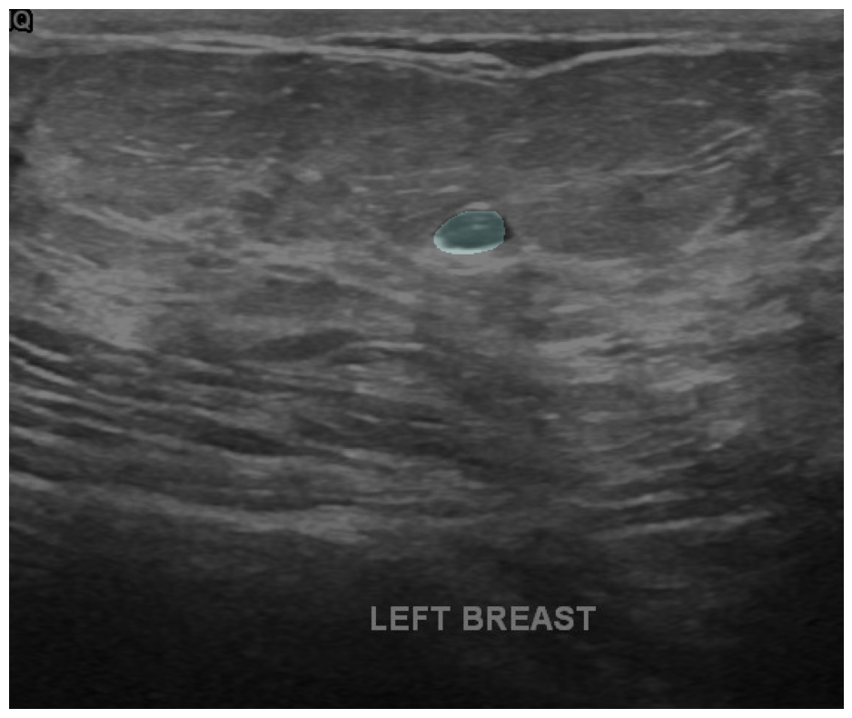

<!DOCTYPE html>


<html lang="en" >

  <head>
    <meta charset="utf-8" />
    <meta name="viewport" content="width=device-width, initial-scale=1.0" /><meta name="generator" content="Docutils 0.18.1: http://docutils.sourceforge.net/" />

    <title>Breast Cancer Segmentation using Transformers &#8212; Brain Code Camp</title>
  
  
  
  <script data-cfasync="false">
    document.documentElement.dataset.mode = localStorage.getItem("mode") || "";
    document.documentElement.dataset.theme = localStorage.getItem("theme") || "light";
  </script>
  
  <!-- Loaded before other Sphinx assets -->
  <link href="../../_static/styles/theme.css?digest=e353d410970836974a52" rel="stylesheet" />
<link href="../../_static/styles/bootstrap.css?digest=e353d410970836974a52" rel="stylesheet" />
<link href="../../_static/styles/pydata-sphinx-theme.css?digest=e353d410970836974a52" rel="stylesheet" />

  
  <link href="../../_static/vendor/fontawesome/6.1.2/css/all.min.css?digest=e353d410970836974a52" rel="stylesheet" />
  <link rel="preload" as="font" type="font/woff2" crossorigin href="../../_static/vendor/fontawesome/6.1.2/webfonts/fa-solid-900.woff2" />
<link rel="preload" as="font" type="font/woff2" crossorigin href="../../_static/vendor/fontawesome/6.1.2/webfonts/fa-brands-400.woff2" />
<link rel="preload" as="font" type="font/woff2" crossorigin href="../../_static/vendor/fontawesome/6.1.2/webfonts/fa-regular-400.woff2" />

    <link rel="stylesheet" type="text/css" href="../../_static/pygments.css" />
    <link rel="stylesheet" href="../../_static/styles/sphinx-book-theme.css?digest=14f4ca6b54d191a8c7657f6c759bf11a5fb86285" type="text/css" />
    <link rel="stylesheet" type="text/css" href="../../_static/togglebutton.css" />
    <link rel="stylesheet" type="text/css" href="../../_static/copybutton.css" />
    <link rel="stylesheet" type="text/css" href="../../_static/mystnb.4510f1fc1dee50b3e5859aac5469c37c29e427902b24a333a5f9fcb2f0b3ac41.css" />
    <link rel="stylesheet" type="text/css" href="../../_static/sphinx-thebe.css" />
    <link rel="stylesheet" type="text/css" href="../../_static/design-style.4045f2051d55cab465a707391d5b2007.min.css" />
  
  <!-- Pre-loaded scripts that we'll load fully later -->
  <link rel="preload" as="script" href="../../_static/scripts/bootstrap.js?digest=e353d410970836974a52" />
<link rel="preload" as="script" href="../../_static/scripts/pydata-sphinx-theme.js?digest=e353d410970836974a52" />

    <script data-url_root="../../" id="documentation_options" src="../../_static/documentation_options.js"></script>
    <script src="../../_static/jquery.js"></script>
    <script src="../../_static/underscore.js"></script>
    <script src="../../_static/_sphinx_javascript_frameworks_compat.js"></script>
    <script src="../../_static/doctools.js"></script>
    <script src="../../_static/clipboard.min.js"></script>
    <script src="../../_static/copybutton.js"></script>
    <script src="../../_static/scripts/sphinx-book-theme.js?digest=5a5c038af52cf7bc1a1ec88eea08e6366ee68824"></script>
    <script>let toggleHintShow = 'Click to show';</script>
    <script>let toggleHintHide = 'Click to hide';</script>
    <script>let toggleOpenOnPrint = 'true';</script>
    <script src="../../_static/togglebutton.js"></script>
    <script>var togglebuttonSelector = '.toggle, .admonition.dropdown';</script>
    <script src="../../_static/design-tabs.js"></script>
    <script>const THEBE_JS_URL = "https://unpkg.com/thebe@0.8.2/lib/index.js"
const thebe_selector = ".thebe,.cell"
const thebe_selector_input = "pre"
const thebe_selector_output = ".output, .cell_output"
</script>
    <script async="async" src="../../_static/sphinx-thebe.js"></script>
    <script>DOCUMENTATION_OPTIONS.pagename = 'Fundamentals/DeepLearning/breast_cancer_segmentation_transformers';</script>
    <link rel="index" title="Index" href="../../genindex.html" />
    <link rel="search" title="Search" href="../../search.html" />
  <meta name="viewport" content="width=device-width, initial-scale=1"/>
  <meta name="docsearch:language" content="en"/>
  </head>
  
  
  <body data-bs-spy="scroll" data-bs-target=".bd-toc-nav" data-offset="180" data-bs-root-margin="0px 0px -60%" data-default-mode="">

  
  
  <a class="skip-link" href="#main-content">Skip to main content</a>
  
  <input type="checkbox"
          class="sidebar-toggle"
          name="__primary"
          id="__primary"/>
  <label class="overlay overlay-primary" for="__primary"></label>
  
  <input type="checkbox"
          class="sidebar-toggle"
          name="__secondary"
          id="__secondary"/>
  <label class="overlay overlay-secondary" for="__secondary"></label>
  
  <div class="search-button__wrapper">
    <div class="search-button__overlay"></div>
    <div class="search-button__search-container">
<form class="bd-search d-flex align-items-center"
      action="../../search.html"
      method="get">
  <i class="fa-solid fa-magnifying-glass"></i>
  <input type="search"
         class="form-control"
         name="q"
         id="search-input"
         placeholder="Search this book..."
         aria-label="Search this book..."
         autocomplete="off"
         autocorrect="off"
         autocapitalize="off"
         spellcheck="false"/>
  <span class="search-button__kbd-shortcut"><kbd class="kbd-shortcut__modifier">Ctrl</kbd>+<kbd>K</kbd></span>
</form></div>
  </div>
  
    <nav class="bd-header navbar navbar-expand-lg bd-navbar">
    </nav>
  
  <div class="bd-container">
    <div class="bd-container__inner bd-page-width">
      
      <div class="bd-sidebar-primary bd-sidebar">
        

  
  <div class="sidebar-header-items sidebar-primary__section">
    
    
    
    
  </div>
  
    <div class="sidebar-primary-items__start sidebar-primary__section">
        <div class="sidebar-primary-item">
  

<a class="navbar-brand logo" href="../../intro.html">
  
  
  
  
    
    
      
    
    
    
    <script>document.write(``);</script>
  
  
</a></div>
        <div class="sidebar-primary-item"><nav class="bd-links" id="bd-docs-nav" aria-label="Main">
    <div class="bd-toc-item navbar-nav active">
        
        <ul class="nav bd-sidenav bd-sidenav__home-link">
            <li class="toctree-l1">
                <a class="reference internal" href="../../intro.html">
                    Welcome to Brain Code Camp
                </a>
            </li>
        </ul>
        <p aria-level="2" class="caption" role="heading"><span class="caption-text">Model Selection</span></p>
<ul class="nav bd-sidenav">
<li class="toctree-l1"><a class="reference internal" href="../ModelSelection/model_selection_part1_lin_reg_eval_metric.html">Linear Model and Evaluation</a></li>
<li class="toctree-l1"><a class="reference internal" href="../ModelSelection/model_selection_part2_poly_overfit_regularization.html">Polynomial Regression and Regularization</a></li>
<li class="toctree-l1"><a class="reference internal" href="../ModelSelection/model_selection_part3_data_splitting.html">Data Splitting</a></li>
</ul>
<p aria-level="2" class="caption" role="heading"><span class="caption-text">Dimensionality Reduction</span></p>
<ul class="nav bd-sidenav">
<li class="toctree-l1"><a class="reference internal" href="../DimensionalityReduction/dim_reduct_part1_intro.html">Dimensionality Reduction (Part 1: Introduction)</a></li>
<li class="toctree-l1"><a class="reference internal" href="../DimensionalityReduction/dim_reduct_part2_pca.html">Dimensionality Reduction (Part 2: Principal Component Analysis)</a></li>
<li class="toctree-l1"><a class="reference internal" href="../DimensionalityReduction/dim_reduct_part3_pca_CDT_images.html">Dimensionality Reduction (Part 3: Applying PCA to Clock Drawing Test (CDT) images)</a></li>
<li class="toctree-l1"><a class="reference internal" href="../DimensionalityReduction/dim_reduct_part4_nonlinear_methods.html">Dimensionality Reduction (Part 4: Nonlinear Methods)</a></li>
</ul>
<p aria-level="2" class="caption" role="heading"><span class="caption-text">Signal Processing</span></p>
<ul class="nav bd-sidenav">
<li class="toctree-l1"><a class="reference internal" href="../SignalProcessing/signal_processing_part1_sampling_averaging.html">Signal Processing (Part 1: Sampling and Signal Averaging)</a></li>

<li class="toctree-l1"><a class="reference internal" href="../SignalProcessing/signal_processing_part2_dft.html">Signal Processing (Part 2: Discrete Fourier Transform (DFT))</a></li>
<li class="toctree-l1"><a class="reference internal" href="../SignalProcessing/signal_processing_part3_STFT.html">Signal Processing (Part 3: Short Time Fourier Transform)</a></li>
<li class="toctree-l1"><a class="reference internal" href="../SignalProcessing/signal_processing_part4_application.html">Signal Processing (Part 4: Application)</a></li>
</ul>

    </div>
</nav></div>
    </div>
  
  
  <div class="sidebar-primary-items__end sidebar-primary__section">
  </div>
  
  <div id="rtd-footer-container"></div>


      </div>
      
      <main id="main-content" class="bd-main">
        
        

<div class="sbt-scroll-pixel-helper"></div>

          <div class="bd-content">
            <div class="bd-article-container">
              
              <div class="bd-header-article">
<div class="header-article-items header-article__inner">
  
    <div class="header-article-items__start">
      
        <div class="header-article-item"><label class="sidebar-toggle primary-toggle btn btn-sm" for="__primary" title="Toggle primary sidebar" data-bs-placement="bottom" data-bs-toggle="tooltip">
  <span class="fa-solid fa-bars"></span>
</label></div>
      
    </div>
  
  
    <div class="header-article-items__end">
      
        <div class="header-article-item">

<div class="article-header-buttons">


<div class="dropdown dropdown-source-buttons">
  <button class="btn dropdown-toggle" type="button" data-bs-toggle="dropdown" aria-expanded="false" aria-label="Source repositories">
    <i class="fab fa-github"></i>
  </button>
  <ul class="dropdown-menu">
      
      
      
      <li><a href="https://github.com/executablebooks/jupyter-book" target="_blank"
   class="btn btn-sm btn-source-repository-button dropdown-item"
   title="Source repository"
   data-bs-placement="left" data-bs-toggle="tooltip"
>
  

<span class="btn__icon-container">
  <i class="fab fa-github"></i>
  </span>
<span class="btn__text-container">Repository</span>
</a>
</li>
      
      
      
      
      <li><a href="https://github.com/executablebooks/jupyter-book/issues/new?title=Issue%20on%20page%20%2FFundamentals/DeepLearning/breast_cancer_segmentation_transformers.html&body=Your%20issue%20content%20here." target="_blank"
   class="btn btn-sm btn-source-issues-button dropdown-item"
   title="Open an issue"
   data-bs-placement="left" data-bs-toggle="tooltip"
>
  

<span class="btn__icon-container">
  <i class="fas fa-lightbulb"></i>
  </span>
<span class="btn__text-container">Open issue</span>
</a>
</li>
      
  </ul>
</div>


<div class="dropdown dropdown-download-buttons">
  <button class="btn dropdown-toggle" type="button" data-bs-toggle="dropdown" aria-expanded="false" aria-label="Download this page">
    <i class="fas fa-download"></i>
  </button>
  <ul class="dropdown-menu">
      
      
      
      <li><a href="../../_sources/Fundamentals/DeepLearning/breast_cancer_segmentation_transformers.ipynb" target="_blank"
   class="btn btn-sm btn-download-source-button dropdown-item"
   title="Download source file"
   data-bs-placement="left" data-bs-toggle="tooltip"
>
  

<span class="btn__icon-container">
  <i class="fas fa-file"></i>
  </span>
<span class="btn__text-container">.ipynb</span>
</a>
</li>
      
      
      
      
      <li>
<button onclick="window.print()"
  class="btn btn-sm btn-download-pdf-button dropdown-item"
  title="Print to PDF"
  data-bs-placement="left" data-bs-toggle="tooltip"
>
  

<span class="btn__icon-container">
  <i class="fas fa-file-pdf"></i>
  </span>
<span class="btn__text-container">.pdf</span>
</button>
</li>
      
  </ul>
</div>


<button onclick="toggleFullScreen()"
  class="btn btn-sm btn-fullscreen-button"
  title="Fullscreen mode"
  data-bs-placement="bottom" data-bs-toggle="tooltip"
>
  

<span class="btn__icon-container">
  <i class="fas fa-expand"></i>
  </span>

</button>


<script>
document.write(`
  <button class="theme-switch-button btn btn-sm btn-outline-primary navbar-btn rounded-circle" title="light/dark" aria-label="light/dark" data-bs-placement="bottom" data-bs-toggle="tooltip">
    <span class="theme-switch" data-mode="light"><i class="fa-solid fa-sun"></i></span>
    <span class="theme-switch" data-mode="dark"><i class="fa-solid fa-moon"></i></span>
    <span class="theme-switch" data-mode="auto"><i class="fa-solid fa-circle-half-stroke"></i></span>
  </button>
`);
</script>

<script>
document.write(`
  <button class="btn btn-sm navbar-btn search-button search-button__button" title="Search" aria-label="Search" data-bs-placement="bottom" data-bs-toggle="tooltip">
    <i class="fa-solid fa-magnifying-glass"></i>
  </button>
`);
</script>
<label class="sidebar-toggle secondary-toggle btn btn-sm" for="__secondary"title="Toggle secondary sidebar" data-bs-placement="bottom" data-bs-toggle="tooltip">
    <span class="fa-solid fa-list"></span>
</label>
</div></div>
      
    </div>
  
</div>
</div>
              
              

<div id="jb-print-docs-body" class="onlyprint">
    <h1>Breast Cancer Segmentation using Transformers</h1>
    <!-- Table of contents -->
    <div id="print-main-content">
        <div id="jb-print-toc">
            
            <div>
                <h2> Contents </h2>
            </div>
            <nav aria-label="Page">
                <ul class="visible nav section-nav flex-column">
<li class="toc-h2 nav-item toc-entry"><a class="reference internal nav-link" href="#inference">Inference</a></li>
</ul>
            </nav>
        </div>
    </div>
</div>

              
                
<div id="searchbox"></div>
                <article class="bd-article" role="main">
                  
  <section class="tex2jax_ignore mathjax_ignore" id="breast-cancer-segmentation-using-transformers">
<h1>Breast Cancer Segmentation using Transformers<a class="headerlink" href="#breast-cancer-segmentation-using-transformers" title="Permalink to this heading">#</a></h1>
<ul class="simple">
<li><p><strong>Semantic segmentation</strong> เป็นการทำนายที่ต้องการนำภาพมาและแบ่งประเภทของแต่ละพิกเซลในภาพ Semantic segmentation มีประโยชน์และถูกนำมาใช้ในหลากหลายแอพพลิเคชั่น เช่น การตัดแบ่งภาพถ่ายทางการแพทย์ และรถยนจ์ขับเคลื่อนอัจฉริยะ ยกตัวอย่างเช่น ในกรณีของรถส่งพิซซ่าอัจโนมัติ การนำ semantic segmentation มาช่วยจะสามารถไกด์ให้รถยังขับอยู่บนทางเท้าได้ ไม่ขับเข้าไปในบริเวณที่ผิดพลาดได้ (ดูตัวอย่างจาก <a class="reference external" href="https://huggingface.co/blog/fine-tune-segformer">https://huggingface.co/blog/fine-tune-segformer</a>)</p></li>
<li><p>วิธีการเก็บข้อมูลของ Semantic segmentation ปกติ จะทำการเก็บภาพที่เราสนใจมาเป็นข้อมูลตั้งต้น จากนั้นใช้ image labeling tools เช่น <a class="reference external" href="https://segments.ai/">Segments.ai</a> หรือ <a class="reference external" href="https://github.com/opencv/cvat">CVAT</a> ในการเก็บข้อมูลพิกเซลชนิดต่างๆ (บางครั้งเรียก “mask”) ในการใช้เป็น label ในการเทรน แต่ในตัวอย่างนี้เราจะใช้ชุดข้อมูลภาพถ่ายอัลตราซาวน์ (ultrasound) ของเต้านม เพื่อตรวจจับเนื้องอกหรือมะเร็งเต้านม</p></li>
<li><p>โดยการทำงานของโมเดลจะนำภาพมาทำการทำนายและสรุปว่าแต่ละ pixel ควรเป็นประเภทใด เช่น พื้นหลัง, เนื้องอก, หรือมะเร็ง โดยในกรณีนี้เราจะนำโมเดล <a class="reference external" href="https://huggingface.co/docs/transformers/model_doc/segformer">Segformer</a> มา fine-tune สำหรับการตรวจจับบริเวณต่างๆที่อาจเป็น เนื้องอก (benign) หรือเนื้อร้าย (malignant) จากภาพถ่ายอัลตราซาวน์ โดยในที่นี้เราจะใช้โมเดลที่ขนาดเล็กที่สุดของ Segformer นั่นคือ <code class="docutils literal notranslate"><span class="pre">MiT-b0</span></code> มาทดลอง fine-tune เพื่อตัดแบ่งภาพของเรา</p></li>
<li><p>สำหรับการวัดผลของ Segmentation ส่วนมากจะใช้ Dice Score (เท่ากับ 2 x Overlapped Area / (Actual Area + Predicted Are) ) หรือ Intersection over union (IoU, เท่ากับ Overlapped Area / Union of actual area and predicted area)</p></li>
<li><p>ตัวอย่างนี้จะแบ่งเป็นการเตรียมข้อมูลที่โหลดมาได้จาก Kaggle, การนำโมเดล Segformer มา fine-tune, และจากนั้นคือการนำโมเดลไปทำนายผลจากภาพใน validation set</p></li>
</ul>
<p>Reference: <a class="reference external" href="https://huggingface.co/blog/fine-tune-segformer">https://huggingface.co/blog/fine-tune-segformer</a></p>
<p>โดย: Peeranut Buabang, Titipat Achakulvisut</p>
<div class="cell docutils container">
<div class="cell_input docutils container">
<div class="highlight-ipython3 notranslate"><div class="highlight"><pre><span></span><span class="o">!</span>pip<span class="w"> </span>install<span class="w"> </span>kaggle
<span class="o">!</span>pip<span class="w"> </span>install<span class="w"> </span>transformers
<span class="o">!</span>pip<span class="w"> </span>install<span class="w"> </span>datasets
<span class="o">!</span>pip<span class="w"> </span>install<span class="w"> </span>evaluate
</pre></div>
</div>
</div>
<div class="cell_output docutils container">
<div class="output stream highlight-myst-ansi notranslate"><div class="highlight"><pre><span></span>Collecting kaggle
</pre></div>
</div>
<div class="output stream highlight-myst-ansi notranslate"><div class="highlight"><pre><span></span>  Downloading kaggle-1.5.13.tar.gz (63 kB)
?25l     ━━━━━━━━━━━━━━━━━━━━━━━━━━━━━━━━━━━━━━━━ <span class=" -Color -Color-Green">0.0/63.3 kB</span> <span class=" -Color -Color-Red">?</span> eta <span class=" -Color -Color-Cyan">-:--:--</span>
     ━━━━━━━━━━━━━━━━━━━━━━━━━━━━━━━━━━━━━━━━ <span class=" -Color -Color-Green">63.3/63.3 kB</span> <span class=" -Color -Color-Red">2.4 MB/s</span> eta <span class=" -Color -Color-Cyan">0:00:00</span>
?25h
</pre></div>
</div>
<div class="output stream highlight-myst-ansi notranslate"><div class="highlight"><pre><span></span>  Preparing metadata (setup.py) ... ?25l-
</pre></div>
</div>
<div class="output stream highlight-myst-ansi notranslate"><div class="highlight"><pre><span></span> \
</pre></div>
</div>
<div class="output stream highlight-myst-ansi notranslate"><div class="highlight"><pre><span></span> done
?25hRequirement already satisfied: six&gt;=1.10 in /opt/hostedtoolcache/Python/3.10.11/x64/lib/python3.10/site-packages (from kaggle) (1.16.0)
Requirement already satisfied: certifi in /opt/hostedtoolcache/Python/3.10.11/x64/lib/python3.10/site-packages (from kaggle) (2023.5.7)
Requirement already satisfied: python-dateutil in /opt/hostedtoolcache/Python/3.10.11/x64/lib/python3.10/site-packages (from kaggle) (2.8.2)
Requirement already satisfied: requests in /opt/hostedtoolcache/Python/3.10.11/x64/lib/python3.10/site-packages (from kaggle) (2.30.0)
</pre></div>
</div>
<div class="output stream highlight-myst-ansi notranslate"><div class="highlight"><pre><span></span>Collecting tqdm (from kaggle)
  Downloading tqdm-4.65.0-py3-none-any.whl (77 kB)
?25l     ━━━━━━━━━━━━━━━━━━━━━━━━━━━━━━━━━━━━━━━━ <span class=" -Color -Color-Green">0.0/77.1 kB</span> <span class=" -Color -Color-Red">?</span> eta <span class=" -Color -Color-Cyan">-:--:--</span>
     ━━━━━━━━━━━━━━━━━━━━━━━━━━━━━━━━━━━━━━━━ <span class=" -Color -Color-Green">77.1/77.1 kB</span> <span class=" -Color -Color-Red">7.5 MB/s</span> eta <span class=" -Color -Color-Cyan">0:00:00</span>
?25h
</pre></div>
</div>
<div class="output stream highlight-myst-ansi notranslate"><div class="highlight"><pre><span></span>Collecting python-slugify (from kaggle)
  Downloading python_slugify-8.0.1-py2.py3-none-any.whl (9.7 kB)
Requirement already satisfied: urllib3 in /opt/hostedtoolcache/Python/3.10.11/x64/lib/python3.10/site-packages (from kaggle) (2.0.2)
Collecting text-unidecode&gt;=1.3 (from python-slugify-&gt;kaggle)
  Downloading text_unidecode-1.3-py2.py3-none-any.whl (78 kB)
?25l     ━━━━━━━━━━━━━━━━━━━━━━━━━━━━━━━━━━━━━━━━ <span class=" -Color -Color-Green">0.0/78.2 kB</span> <span class=" -Color -Color-Red">?</span> eta <span class=" -Color -Color-Cyan">-:--:--</span>
     ━━━━━━━━━━━━━━━━━━━━━━━━━━━━━━━━━━━━━━━━ <span class=" -Color -Color-Green">78.2/78.2 kB</span> <span class=" -Color -Color-Red">27.4 MB/s</span> eta <span class=" -Color -Color-Cyan">0:00:00</span>
?25hRequirement already satisfied: charset-normalizer&lt;4,&gt;=2 in /opt/hostedtoolcache/Python/3.10.11/x64/lib/python3.10/site-packages (from requests-&gt;kaggle) (3.1.0)
Requirement already satisfied: idna&lt;4,&gt;=2.5 in /opt/hostedtoolcache/Python/3.10.11/x64/lib/python3.10/site-packages (from requests-&gt;kaggle) (3.4)
</pre></div>
</div>
<div class="output stream highlight-myst-ansi notranslate"><div class="highlight"><pre><span></span>Building wheels for collected packages: kaggle
</pre></div>
</div>
<div class="output stream highlight-myst-ansi notranslate"><div class="highlight"><pre><span></span>  Building wheel for kaggle (setup.py) ... ?25l-
</pre></div>
</div>
<div class="output stream highlight-myst-ansi notranslate"><div class="highlight"><pre><span></span> \
</pre></div>
</div>
<div class="output stream highlight-myst-ansi notranslate"><div class="highlight"><pre><span></span> |
</pre></div>
</div>
<div class="output stream highlight-myst-ansi notranslate"><div class="highlight"><pre><span></span> done
?25h  Created wheel for kaggle: filename=kaggle-1.5.13-py3-none-any.whl size=77717 sha256=8d400671b79e29fa4a56dcbaa3b8f603c5fddc0743f52417c146847cd4d4ec76
  Stored in directory: /home/runner/.cache/pip/wheels/f3/16/ff/34e7d368370d4fd68bb749a59f1d2639ed66f3c14358e340a1
Successfully built kaggle
</pre></div>
</div>
<div class="output stream highlight-myst-ansi notranslate"><div class="highlight"><pre><span></span>Installing collected packages: text-unidecode, tqdm, python-slugify, kaggle
</pre></div>
</div>
<div class="output stream highlight-myst-ansi notranslate"><div class="highlight"><pre><span></span>Successfully installed kaggle-1.5.13 python-slugify-8.0.1 text-unidecode-1.3 tqdm-4.65.0
</pre></div>
</div>
<div class="output stream highlight-myst-ansi notranslate"><div class="highlight"><pre><span></span><span class=" -Color -Color-Bold">[</span><span class=" -Color -Color-Blue">notice</span><span class=" -Color -Color-Bold">]</span> A new release of pip is available: <span class=" -Color -Color-Red">23.0.1</span> -&gt; <span class=" -Color -Color-Green">23.1.2</span>
<span class=" -Color -Color-Bold">[</span><span class=" -Color -Color-Blue">notice</span><span class=" -Color -Color-Bold">]</span> To update, run: <span class=" -Color -Color-Green">pip install --upgrade pip</span>
</pre></div>
</div>
<div class="output stream highlight-myst-ansi notranslate"><div class="highlight"><pre><span></span>Collecting transformers
</pre></div>
</div>
<div class="output stream highlight-myst-ansi notranslate"><div class="highlight"><pre><span></span>  Downloading transformers-4.29.2-py3-none-any.whl (7.1 MB)
?25l     ━━━━━━━━━━━━━━━━━━━━━━━━━━━━━━━━━━━━━━━━ <span class=" -Color -Color-Green">0.0/7.1 MB</span> <span class=" -Color -Color-Red">?</span> eta <span class=" -Color -Color-Cyan">-:--:--</span>
</pre></div>
</div>
<div class="output stream highlight-myst-ansi notranslate"><div class="highlight"><pre><span></span>     ╸━━━━━━━━━━━━━━━━━━━━━━━━━━━━━━━━━━━━━━━ <span class=" -Color -Color-Green">0.1/7.1 MB</span> <span class=" -Color -Color-Red">3.5 MB/s</span> eta <span class=" -Color -Color-Cyan">0:00:03</span>
     ━━━━━━━━━━━━━━━━━━━━━━━━━━━━╸━━━━━━━━━━━ <span class=" -Color -Color-Green">5.1/7.1 MB</span> <span class=" -Color -Color-Red">74.3 MB/s</span> eta <span class=" -Color -Color-Cyan">0:00:01</span>
</pre></div>
</div>
<div class="output stream highlight-myst-ansi notranslate"><div class="highlight"><pre><span></span>     ━━━━━━━━━━━━━━━━━━━━━━━━━━━━━━━━━━━━━━━╸ <span class=" -Color -Color-Green">7.1/7.1 MB</span> <span class=" -Color -Color-Red">88.9 MB/s</span> eta <span class=" -Color -Color-Cyan">0:00:01</span>
     ━━━━━━━━━━━━━━━━━━━━━━━━━━━━━━━━━━━━━━━━ <span class=" -Color -Color-Green">7.1/7.1 MB</span> <span class=" -Color -Color-Red">65.9 MB/s</span> eta <span class=" -Color -Color-Cyan">0:00:00</span>
?25h
</pre></div>
</div>
<div class="output stream highlight-myst-ansi notranslate"><div class="highlight"><pre><span></span>Collecting filelock (from transformers)
  Downloading filelock-3.12.0-py3-none-any.whl (10 kB)
</pre></div>
</div>
<div class="output stream highlight-myst-ansi notranslate"><div class="highlight"><pre><span></span>Collecting huggingface-hub&lt;1.0,&gt;=0.14.1 (from transformers)
  Downloading huggingface_hub-0.14.1-py3-none-any.whl (224 kB)
?25l     ━━━━━━━━━━━━━━━━━━━━━━━━━━━━━━━━━━━━━━━━ <span class=" -Color -Color-Green">0.0/224.5 kB</span> <span class=" -Color -Color-Red">?</span> eta <span class=" -Color -Color-Cyan">-:--:--</span>
     ━━━━━━━━━━━━━━━━━━━━━━━━━━━━━━━━━━━━━━ <span class=" -Color -Color-Green">224.5/224.5 kB</span> <span class=" -Color -Color-Red">56.9 MB/s</span> eta <span class=" -Color -Color-Cyan">0:00:00</span>
?25hRequirement already satisfied: numpy&gt;=1.17 in /opt/hostedtoolcache/Python/3.10.11/x64/lib/python3.10/site-packages (from transformers) (1.24.3)
Requirement already satisfied: packaging&gt;=20.0 in /opt/hostedtoolcache/Python/3.10.11/x64/lib/python3.10/site-packages (from transformers) (23.1)
Requirement already satisfied: pyyaml&gt;=5.1 in /opt/hostedtoolcache/Python/3.10.11/x64/lib/python3.10/site-packages (from transformers) (6.0)
</pre></div>
</div>
<div class="output stream highlight-myst-ansi notranslate"><div class="highlight"><pre><span></span>Collecting regex!=2019.12.17 (from transformers)
</pre></div>
</div>
<div class="output stream highlight-myst-ansi notranslate"><div class="highlight"><pre><span></span>  Downloading regex-2023.5.5-cp310-cp310-manylinux_2_17_x86_64.manylinux2014_x86_64.whl (769 kB)
?25l     ━━━━━━━━━━━━━━━━━━━━━━━━━━━━━━━━━━━━━━━━ <span class=" -Color -Color-Green">0.0/769.7 kB</span> <span class=" -Color -Color-Red">?</span> eta <span class=" -Color -Color-Cyan">-:--:--</span>
     ━━━━━━━━━━━━━━━━━━━━━━━━━━━━━━━━━━━━━━ <span class=" -Color -Color-Green">769.7/769.7 kB</span> <span class=" -Color -Color-Red">85.5 MB/s</span> eta <span class=" -Color -Color-Cyan">0:00:00</span>
?25hRequirement already satisfied: requests in /opt/hostedtoolcache/Python/3.10.11/x64/lib/python3.10/site-packages (from transformers) (2.30.0)
</pre></div>
</div>
<div class="output stream highlight-myst-ansi notranslate"><div class="highlight"><pre><span></span>Collecting tokenizers!=0.11.3,&lt;0.14,&gt;=0.11.1 (from transformers)
  Downloading tokenizers-0.13.3-cp310-cp310-manylinux_2_17_x86_64.manylinux2014_x86_64.whl (7.8 MB)
?25l     ━━━━━━━━━━━━━━━━━━━━━━━━━━━━━━━━━━━━━━━━ <span class=" -Color -Color-Green">0.0/7.8 MB</span> <span class=" -Color -Color-Red">?</span> eta <span class=" -Color -Color-Cyan">-:--:--</span>
</pre></div>
</div>
<div class="output stream highlight-myst-ansi notranslate"><div class="highlight"><pre><span></span>     ━━━━━━━━━━━━━━━━━━━━━━━━━━━━━━━╺━━━━━━━━ <span class=" -Color -Color-Green">6.1/7.8 MB</span> <span class=" -Color -Color-Red">183.3 MB/s</span> eta <span class=" -Color -Color-Cyan">0:00:01</span>
     ━━━━━━━━━━━━━━━━━━━━━━━━━━━━━━━━━━━━━━━╸ <span class=" -Color -Color-Green">7.8/7.8 MB</span> <span class=" -Color -Color-Red">179.4 MB/s</span> eta <span class=" -Color -Color-Cyan">0:00:01</span>
     ━━━━━━━━━━━━━━━━━━━━━━━━━━━━━━━━━━━━━━━━ <span class=" -Color -Color-Green">7.8/7.8 MB</span> <span class=" -Color -Color-Red">108.7 MB/s</span> eta <span class=" -Color -Color-Cyan">0:00:00</span>
?25h
</pre></div>
</div>
<div class="output stream highlight-myst-ansi notranslate"><div class="highlight"><pre><span></span>Requirement already satisfied: tqdm&gt;=4.27 in /opt/hostedtoolcache/Python/3.10.11/x64/lib/python3.10/site-packages (from transformers) (4.65.0)
</pre></div>
</div>
<div class="output stream highlight-myst-ansi notranslate"><div class="highlight"><pre><span></span>Collecting fsspec (from huggingface-hub&lt;1.0,&gt;=0.14.1-&gt;transformers)
  Downloading fsspec-2023.5.0-py3-none-any.whl (160 kB)
?25l     ━━━━━━━━━━━━━━━━━━━━━━━━━━━━━━━━━━━━━━━━ <span class=" -Color -Color-Green">0.0/160.1 kB</span> <span class=" -Color -Color-Red">?</span> eta <span class=" -Color -Color-Cyan">-:--:--</span>
     ━━━━━━━━━━━━━━━━━━━━━━━━━━━━━━━━━━━━━━ <span class=" -Color -Color-Green">160.1/160.1 kB</span> <span class=" -Color -Color-Red">42.5 MB/s</span> eta <span class=" -Color -Color-Cyan">0:00:00</span>
?25hRequirement already satisfied: typing-extensions&gt;=3.7.4.3 in /opt/hostedtoolcache/Python/3.10.11/x64/lib/python3.10/site-packages (from huggingface-hub&lt;1.0,&gt;=0.14.1-&gt;transformers) (4.5.0)
</pre></div>
</div>
<div class="output stream highlight-myst-ansi notranslate"><div class="highlight"><pre><span></span>Requirement already satisfied: charset-normalizer&lt;4,&gt;=2 in /opt/hostedtoolcache/Python/3.10.11/x64/lib/python3.10/site-packages (from requests-&gt;transformers) (3.1.0)
Requirement already satisfied: idna&lt;4,&gt;=2.5 in /opt/hostedtoolcache/Python/3.10.11/x64/lib/python3.10/site-packages (from requests-&gt;transformers) (3.4)
Requirement already satisfied: urllib3&lt;3,&gt;=1.21.1 in /opt/hostedtoolcache/Python/3.10.11/x64/lib/python3.10/site-packages (from requests-&gt;transformers) (2.0.2)
Requirement already satisfied: certifi&gt;=2017.4.17 in /opt/hostedtoolcache/Python/3.10.11/x64/lib/python3.10/site-packages (from requests-&gt;transformers) (2023.5.7)
</pre></div>
</div>
<div class="output stream highlight-myst-ansi notranslate"><div class="highlight"><pre><span></span>Installing collected packages: tokenizers, regex, fsspec, filelock, huggingface-hub, transformers
</pre></div>
</div>
<div class="output stream highlight-myst-ansi notranslate"><div class="highlight"><pre><span></span>Successfully installed filelock-3.12.0 fsspec-2023.5.0 huggingface-hub-0.14.1 regex-2023.5.5 tokenizers-0.13.3 transformers-4.29.2
</pre></div>
</div>
<div class="output stream highlight-myst-ansi notranslate"><div class="highlight"><pre><span></span><span class=" -Color -Color-Bold">[</span><span class=" -Color -Color-Blue">notice</span><span class=" -Color -Color-Bold">]</span> A new release of pip is available: <span class=" -Color -Color-Red">23.0.1</span> -&gt; <span class=" -Color -Color-Green">23.1.2</span>
<span class=" -Color -Color-Bold">[</span><span class=" -Color -Color-Blue">notice</span><span class=" -Color -Color-Bold">]</span> To update, run: <span class=" -Color -Color-Green">pip install --upgrade pip</span>
</pre></div>
</div>
<div class="output stream highlight-myst-ansi notranslate"><div class="highlight"><pre><span></span>Collecting datasets
</pre></div>
</div>
<div class="output stream highlight-myst-ansi notranslate"><div class="highlight"><pre><span></span>  Downloading datasets-2.12.0-py3-none-any.whl (474 kB)
?25l     ━━━━━━━━━━━━━━━━━━━━━━━━━━━━━━━━━━━━━━━━ <span class=" -Color -Color-Green">0.0/474.6 kB</span> <span class=" -Color -Color-Red">?</span> eta <span class=" -Color -Color-Cyan">-:--:--</span>
</pre></div>
</div>
<div class="output stream highlight-myst-ansi notranslate"><div class="highlight"><pre><span></span>     ━━━━━━━━━━╺━━━━━━━━━━━━━━━━━━━━━━━━━━━━ <span class=" -Color -Color-Green">122.9/474.6 kB</span> <span class=" -Color -Color-Red">3.4 MB/s</span> eta <span class=" -Color -Color-Cyan">0:00:01</span>
     ━━━━━━━━━━━━━━━━━━━━━━━━━━━━━━━━━━━━━━━ <span class=" -Color -Color-Green">474.6/474.6 kB</span> <span class=" -Color -Color-Red">8.3 MB/s</span> eta <span class=" -Color -Color-Cyan">0:00:00</span>
?25h
</pre></div>
</div>
<div class="output stream highlight-myst-ansi notranslate"><div class="highlight"><pre><span></span>Requirement already satisfied: numpy&gt;=1.17 in /opt/hostedtoolcache/Python/3.10.11/x64/lib/python3.10/site-packages (from datasets) (1.24.3)
</pre></div>
</div>
<div class="output stream highlight-myst-ansi notranslate"><div class="highlight"><pre><span></span>Collecting pyarrow&gt;=8.0.0 (from datasets)
</pre></div>
</div>
<div class="output stream highlight-myst-ansi notranslate"><div class="highlight"><pre><span></span>  Downloading pyarrow-12.0.0-cp310-cp310-manylinux_2_17_x86_64.manylinux2014_x86_64.whl (38.9 MB)
?25l     ━━━━━━━━━━━━━━━━━━━━━━━━━━━━━━━━━━━━━━━━ <span class=" -Color -Color-Green">0.0/38.9 MB</span> <span class=" -Color -Color-Red">?</span> eta <span class=" -Color -Color-Cyan">-:--:--</span>
     ━━━━━━╺━━━━━━━━━━━━━━━━━━━━━━━━━━━━━━━━━ <span class=" -Color -Color-Green">6.0/38.9 MB</span> <span class=" -Color -Color-Red">168.8 MB/s</span> eta <span class=" -Color -Color-Cyan">0:00:01</span>
</pre></div>
</div>
<div class="output stream highlight-myst-ansi notranslate"><div class="highlight"><pre><span></span>     ━━━━━━━━━━━╸━━━━━━━━━━━━━━━━━━━━━━━━━━━ <span class=" -Color -Color-Green">11.8/38.9 MB</span> <span class=" -Color -Color-Red">167.2 MB/s</span> eta <span class=" -Color -Color-Cyan">0:00:01</span>
</pre></div>
</div>
<div class="output stream highlight-myst-ansi notranslate"><div class="highlight"><pre><span></span>     ━━━━━━━━━━━━━━━━━╸━━━━━━━━━━━━━━━━━━━━━ <span class=" -Color -Color-Green">18.0/38.9 MB</span> <span class=" -Color -Color-Red">172.9 MB/s</span> eta <span class=" -Color -Color-Cyan">0:00:01</span>
     ━━━━━━━━━━━━━━━━━━━━━━━━╺━━━━━━━━━━━━━━ <span class=" -Color -Color-Green">24.0/38.9 MB</span> <span class=" -Color -Color-Red">174.1 MB/s</span> eta <span class=" -Color -Color-Cyan">0:00:01</span>
</pre></div>
</div>
<div class="output stream highlight-myst-ansi notranslate"><div class="highlight"><pre><span></span>     ━━━━━━━━━━━━━━━━━━━━━━━━━━━━━━╺━━━━━━━━ <span class=" -Color -Color-Green">30.0/38.9 MB</span> <span class=" -Color -Color-Red">173.4 MB/s</span> eta <span class=" -Color -Color-Cyan">0:00:01</span>
</pre></div>
</div>
<div class="output stream highlight-myst-ansi notranslate"><div class="highlight"><pre><span></span>     ━━━━━━━━━━━━━━━━━━━━━━━━━━━━━━━━━━━━╺━━ <span class=" -Color -Color-Green">36.4/38.9 MB</span> <span class=" -Color -Color-Red">179.5 MB/s</span> eta <span class=" -Color -Color-Cyan">0:00:01</span>
     ━━━━━━━━━━━━━━━━━━━━━━━━━━━━━━━━━━━━━━╸ <span class=" -Color -Color-Green">38.9/38.9 MB</span> <span class=" -Color -Color-Red">180.3 MB/s</span> eta <span class=" -Color -Color-Cyan">0:00:01</span>
</pre></div>
</div>
<div class="output stream highlight-myst-ansi notranslate"><div class="highlight"><pre><span></span>     ━━━━━━━━━━━━━━━━━━━━━━━━━━━━━━━━━━━━━━╸ <span class=" -Color -Color-Green">38.9/38.9 MB</span> <span class=" -Color -Color-Red">180.3 MB/s</span> eta <span class=" -Color -Color-Cyan">0:00:01</span>
</pre></div>
</div>
<div class="output stream highlight-myst-ansi notranslate"><div class="highlight"><pre><span></span>     ━━━━━━━━━━━━━━━━━━━━━━━━━━━━━━━━━━━━━━╸ <span class=" -Color -Color-Green">38.9/38.9 MB</span> <span class=" -Color -Color-Red">180.3 MB/s</span> eta <span class=" -Color -Color-Cyan">0:00:01</span>
     ━━━━━━━━━━━━━━━━━━━━━━━━━━━━━━━━━━━━━━━━ <span class=" -Color -Color-Green">38.9/38.9 MB</span> <span class=" -Color -Color-Red">56.3 MB/s</span> eta <span class=" -Color -Color-Cyan">0:00:00</span>
?25h
</pre></div>
</div>
<div class="output stream highlight-myst-ansi notranslate"><div class="highlight"><pre><span></span>Collecting dill&lt;0.3.7,&gt;=0.3.0 (from datasets)
  Downloading dill-0.3.6-py3-none-any.whl (110 kB)
?25l     ━━━━━━━━━━━━━━━━━━━━━━━━━━━━━━━━━━━━━━━━ <span class=" -Color -Color-Green">0.0/110.5 kB</span> <span class=" -Color -Color-Red">?</span> eta <span class=" -Color -Color-Cyan">-:--:--</span>
     ━━━━━━━━━━━━━━━━━━━━━━━━━━━━━━━━━━━━━━ <span class=" -Color -Color-Green">110.5/110.5 kB</span> <span class=" -Color -Color-Red">39.1 MB/s</span> eta <span class=" -Color -Color-Cyan">0:00:00</span>
?25h
</pre></div>
</div>
<div class="output stream highlight-myst-ansi notranslate"><div class="highlight"><pre><span></span>Collecting pandas (from datasets)
  Downloading pandas-2.0.1-cp310-cp310-manylinux_2_17_x86_64.manylinux2014_x86_64.whl (12.3 MB)
?25l     ━━━━━━━━━━━━━━━━━━━━━━━━━━━━━━━━━━━━━━━━ <span class=" -Color -Color-Green">0.0/12.3 MB</span> <span class=" -Color -Color-Red">?</span> eta <span class=" -Color -Color-Cyan">-:--:--</span>
</pre></div>
</div>
<div class="output stream highlight-myst-ansi notranslate"><div class="highlight"><pre><span></span>     ━━━━━━━━━━━━━━━━━━━╺━━━━━━━━━━━━━━━━━━━━ <span class=" -Color -Color-Green">5.9/12.3 MB</span> <span class=" -Color -Color-Red">176.4 MB/s</span> eta <span class=" -Color -Color-Cyan">0:00:01</span>
</pre></div>
</div>
<div class="output stream highlight-myst-ansi notranslate"><div class="highlight"><pre><span></span>     ━━━━━━━━━━━━━━━━━━━━━━━━━━━━━━━━━━━━━━╸ <span class=" -Color -Color-Green">12.3/12.3 MB</span> <span class=" -Color -Color-Red">187.9 MB/s</span> eta <span class=" -Color -Color-Cyan">0:00:01</span>
     ━━━━━━━━━━━━━━━━━━━━━━━━━━━━━━━━━━━━━━━ <span class=" -Color -Color-Green">12.3/12.3 MB</span> <span class=" -Color -Color-Red">106.6 MB/s</span> eta <span class=" -Color -Color-Cyan">0:00:00</span>
?25h
</pre></div>
</div>
<div class="output stream highlight-myst-ansi notranslate"><div class="highlight"><pre><span></span>Requirement already satisfied: requests&gt;=2.19.0 in /opt/hostedtoolcache/Python/3.10.11/x64/lib/python3.10/site-packages (from datasets) (2.30.0)
Requirement already satisfied: tqdm&gt;=4.62.1 in /opt/hostedtoolcache/Python/3.10.11/x64/lib/python3.10/site-packages (from datasets) (4.65.0)
</pre></div>
</div>
<div class="output stream highlight-myst-ansi notranslate"><div class="highlight"><pre><span></span>Collecting xxhash (from datasets)
  Downloading xxhash-3.2.0-cp310-cp310-manylinux_2_17_x86_64.manylinux2014_x86_64.whl (212 kB)
?25l     ━━━━━━━━━━━━━━━━━━━━━━━━━━━━━━━━━━━━━━━━ <span class=" -Color -Color-Green">0.0/212.5 kB</span> <span class=" -Color -Color-Red">?</span> eta <span class=" -Color -Color-Cyan">-:--:--</span>
     ━━━━━━━━━━━━━━━━━━━━━━━━━━━━━━━━━━━━━━ <span class=" -Color -Color-Green">212.5/212.5 kB</span> <span class=" -Color -Color-Red">56.1 MB/s</span> eta <span class=" -Color -Color-Cyan">0:00:00</span>
?25h
</pre></div>
</div>
<div class="output stream highlight-myst-ansi notranslate"><div class="highlight"><pre><span></span>Collecting multiprocess (from datasets)
  Downloading multiprocess-0.70.14-py310-none-any.whl (134 kB)
?25l     ━━━━━━━━━━━━━━━━━━━━━━━━━━━━━━━━━━━━━━━━ <span class=" -Color -Color-Green">0.0/134.3 kB</span> <span class=" -Color -Color-Red">?</span> eta <span class=" -Color -Color-Cyan">-:--:--</span>
     ━━━━━━━━━━━━━━━━━━━━━━━━━━━━━━━━━━━━━━ <span class=" -Color -Color-Green">134.3/134.3 kB</span> <span class=" -Color -Color-Red">38.2 MB/s</span> eta <span class=" -Color -Color-Cyan">0:00:00</span>
?25hRequirement already satisfied: fsspec[http]&gt;=2021.11.1 in /opt/hostedtoolcache/Python/3.10.11/x64/lib/python3.10/site-packages (from datasets) (2023.5.0)
</pre></div>
</div>
<div class="output stream highlight-myst-ansi notranslate"><div class="highlight"><pre><span></span>Collecting aiohttp (from datasets)
  Downloading aiohttp-3.8.4-cp310-cp310-manylinux_2_17_x86_64.manylinux2014_x86_64.whl (1.0 MB)
?25l     ━━━━━━━━━━━━━━━━━━━━━━━━━━━━━━━━━━━━━━━━ <span class=" -Color -Color-Green">0.0/1.0 MB</span> <span class=" -Color -Color-Red">?</span> eta <span class=" -Color -Color-Cyan">-:--:--</span>
     ━━━━━━━━━━━━━━━━━━━━━━━━━━━━━━━━━━━━━━━━ <span class=" -Color -Color-Green">1.0/1.0 MB</span> <span class=" -Color -Color-Red">101.0 MB/s</span> eta <span class=" -Color -Color-Cyan">0:00:00</span>
?25h
</pre></div>
</div>
<div class="output stream highlight-myst-ansi notranslate"><div class="highlight"><pre><span></span>Requirement already satisfied: huggingface-hub&lt;1.0.0,&gt;=0.11.0 in /opt/hostedtoolcache/Python/3.10.11/x64/lib/python3.10/site-packages (from datasets) (0.14.1)
Requirement already satisfied: packaging in /opt/hostedtoolcache/Python/3.10.11/x64/lib/python3.10/site-packages (from datasets) (23.1)
Collecting responses&lt;0.19 (from datasets)
  Downloading responses-0.18.0-py3-none-any.whl (38 kB)
Requirement already satisfied: pyyaml&gt;=5.1 in /opt/hostedtoolcache/Python/3.10.11/x64/lib/python3.10/site-packages (from datasets) (6.0)
</pre></div>
</div>
<div class="output stream highlight-myst-ansi notranslate"><div class="highlight"><pre><span></span>Requirement already satisfied: attrs&gt;=17.3.0 in /opt/hostedtoolcache/Python/3.10.11/x64/lib/python3.10/site-packages (from aiohttp-&gt;datasets) (23.1.0)
Requirement already satisfied: charset-normalizer&lt;4.0,&gt;=2.0 in /opt/hostedtoolcache/Python/3.10.11/x64/lib/python3.10/site-packages (from aiohttp-&gt;datasets) (3.1.0)
</pre></div>
</div>
<div class="output stream highlight-myst-ansi notranslate"><div class="highlight"><pre><span></span>Collecting multidict&lt;7.0,&gt;=4.5 (from aiohttp-&gt;datasets)
  Downloading multidict-6.0.4-cp310-cp310-manylinux_2_17_x86_64.manylinux2014_x86_64.whl (114 kB)
?25l     ━━━━━━━━━━━━━━━━━━━━━━━━━━━━━━━━━━━━━━━━ <span class=" -Color -Color-Green">0.0/114.5 kB</span> <span class=" -Color -Color-Red">?</span> eta <span class=" -Color -Color-Cyan">-:--:--</span>
     ━━━━━━━━━━━━━━━━━━━━━━━━━━━━━━━━━━━━━━ <span class=" -Color -Color-Green">114.5/114.5 kB</span> <span class=" -Color -Color-Red">37.8 MB/s</span> eta <span class=" -Color -Color-Cyan">0:00:00</span>
?25hCollecting async-timeout&lt;5.0,&gt;=4.0.0a3 (from aiohttp-&gt;datasets)
  Downloading async_timeout-4.0.2-py3-none-any.whl (5.8 kB)
</pre></div>
</div>
<div class="output stream highlight-myst-ansi notranslate"><div class="highlight"><pre><span></span>Collecting yarl&lt;2.0,&gt;=1.0 (from aiohttp-&gt;datasets)
  Downloading yarl-1.9.2-cp310-cp310-manylinux_2_17_x86_64.manylinux2014_x86_64.whl (268 kB)
?25l     ━━━━━━━━━━━━━━━━━━━━━━━━━━━━━━━━━━━━━━━━ <span class=" -Color -Color-Green">0.0/268.8 kB</span> <span class=" -Color -Color-Red">?</span> eta <span class=" -Color -Color-Cyan">-:--:--</span>
     ━━━━━━━━━━━━━━━━━━━━━━━━━━━━━━━━━━━━━━ <span class=" -Color -Color-Green">268.8/268.8 kB</span> <span class=" -Color -Color-Red">62.8 MB/s</span> eta <span class=" -Color -Color-Cyan">0:00:00</span>
?25h
</pre></div>
</div>
<div class="output stream highlight-myst-ansi notranslate"><div class="highlight"><pre><span></span>Collecting frozenlist&gt;=1.1.1 (from aiohttp-&gt;datasets)
  Downloading frozenlist-1.3.3-cp310-cp310-manylinux_2_5_x86_64.manylinux1_x86_64.manylinux_2_17_x86_64.manylinux2014_x86_64.whl (149 kB)
?25l     ━━━━━━━━━━━━━━━━━━━━━━━━━━━━━━━━━━━━━━━━ <span class=" -Color -Color-Green">0.0/149.6 kB</span> <span class=" -Color -Color-Red">?</span> eta <span class=" -Color -Color-Cyan">-:--:--</span>
     ━━━━━━━━━━━━━━━━━━━━━━━━━━━━━━━━━━━━━━ <span class=" -Color -Color-Green">149.6/149.6 kB</span> <span class=" -Color -Color-Red">40.5 MB/s</span> eta <span class=" -Color -Color-Cyan">0:00:00</span>
?25h
</pre></div>
</div>
<div class="output stream highlight-myst-ansi notranslate"><div class="highlight"><pre><span></span>Collecting aiosignal&gt;=1.1.2 (from aiohttp-&gt;datasets)
  Downloading aiosignal-1.3.1-py3-none-any.whl (7.6 kB)
</pre></div>
</div>
<div class="output stream highlight-myst-ansi notranslate"><div class="highlight"><pre><span></span>Requirement already satisfied: filelock in /opt/hostedtoolcache/Python/3.10.11/x64/lib/python3.10/site-packages (from huggingface-hub&lt;1.0.0,&gt;=0.11.0-&gt;datasets) (3.12.0)
Requirement already satisfied: typing-extensions&gt;=3.7.4.3 in /opt/hostedtoolcache/Python/3.10.11/x64/lib/python3.10/site-packages (from huggingface-hub&lt;1.0.0,&gt;=0.11.0-&gt;datasets) (4.5.0)
Requirement already satisfied: idna&lt;4,&gt;=2.5 in /opt/hostedtoolcache/Python/3.10.11/x64/lib/python3.10/site-packages (from requests&gt;=2.19.0-&gt;datasets) (3.4)
Requirement already satisfied: urllib3&lt;3,&gt;=1.21.1 in /opt/hostedtoolcache/Python/3.10.11/x64/lib/python3.10/site-packages (from requests&gt;=2.19.0-&gt;datasets) (2.0.2)
Requirement already satisfied: certifi&gt;=2017.4.17 in /opt/hostedtoolcache/Python/3.10.11/x64/lib/python3.10/site-packages (from requests&gt;=2.19.0-&gt;datasets) (2023.5.7)
</pre></div>
</div>
<div class="output stream highlight-myst-ansi notranslate"><div class="highlight"><pre><span></span>Requirement already satisfied: python-dateutil&gt;=2.8.2 in /opt/hostedtoolcache/Python/3.10.11/x64/lib/python3.10/site-packages (from pandas-&gt;datasets) (2.8.2)
</pre></div>
</div>
<div class="output stream highlight-myst-ansi notranslate"><div class="highlight"><pre><span></span>Collecting pytz&gt;=2020.1 (from pandas-&gt;datasets)
  Downloading pytz-2023.3-py2.py3-none-any.whl (502 kB)
?25l     ━━━━━━━━━━━━━━━━━━━━━━━━━━━━━━━━━━━━━━━━ <span class=" -Color -Color-Green">0.0/502.3 kB</span> <span class=" -Color -Color-Red">?</span> eta <span class=" -Color -Color-Cyan">-:--:--</span>
     ━━━━━━━━━━━━━━━━━━━━━━━━━━━━━━━━━━━━━━ <span class=" -Color -Color-Green">502.3/502.3 kB</span> <span class=" -Color -Color-Red">87.3 MB/s</span> eta <span class=" -Color -Color-Cyan">0:00:00</span>
?25h
</pre></div>
</div>
<div class="output stream highlight-myst-ansi notranslate"><div class="highlight"><pre><span></span>Collecting tzdata&gt;=2022.1 (from pandas-&gt;datasets)
  Downloading tzdata-2023.3-py2.py3-none-any.whl (341 kB)
?25l     ━━━━━━━━━━━━━━━━━━━━━━━━━━━━━━━━━━━━━━━━ <span class=" -Color -Color-Green">0.0/341.8 kB</span> <span class=" -Color -Color-Red">?</span> eta <span class=" -Color -Color-Cyan">-:--:--</span>
     ━━━━━━━━━━━━━━━━━━━━━━━━━━━━━━━━━━━━━━ <span class=" -Color -Color-Green">341.8/341.8 kB</span> <span class=" -Color -Color-Red">74.0 MB/s</span> eta <span class=" -Color -Color-Cyan">0:00:00</span>
?25h
</pre></div>
</div>
<div class="output stream highlight-myst-ansi notranslate"><div class="highlight"><pre><span></span>Requirement already satisfied: six&gt;=1.5 in /opt/hostedtoolcache/Python/3.10.11/x64/lib/python3.10/site-packages (from python-dateutil&gt;=2.8.2-&gt;pandas-&gt;datasets) (1.16.0)
</pre></div>
</div>
<div class="output stream highlight-myst-ansi notranslate"><div class="highlight"><pre><span></span>Installing collected packages: pytz, xxhash, tzdata, pyarrow, multidict, frozenlist, dill, async-timeout, yarl, responses, pandas, multiprocess, aiosignal, aiohttp, datasets
</pre></div>
</div>
<div class="output stream highlight-myst-ansi notranslate"><div class="highlight"><pre><span></span>Successfully installed aiohttp-3.8.4 aiosignal-1.3.1 async-timeout-4.0.2 datasets-2.12.0 dill-0.3.6 frozenlist-1.3.3 multidict-6.0.4 multiprocess-0.70.14 pandas-2.0.1 pyarrow-12.0.0 pytz-2023.3 responses-0.18.0 tzdata-2023.3 xxhash-3.2.0 yarl-1.9.2
</pre></div>
</div>
<div class="output stream highlight-myst-ansi notranslate"><div class="highlight"><pre><span></span><span class=" -Color -Color-Bold">[</span><span class=" -Color -Color-Blue">notice</span><span class=" -Color -Color-Bold">]</span> A new release of pip is available: <span class=" -Color -Color-Red">23.0.1</span> -&gt; <span class=" -Color -Color-Green">23.1.2</span>
<span class=" -Color -Color-Bold">[</span><span class=" -Color -Color-Blue">notice</span><span class=" -Color -Color-Bold">]</span> To update, run: <span class=" -Color -Color-Green">pip install --upgrade pip</span>
</pre></div>
</div>
<div class="output stream highlight-myst-ansi notranslate"><div class="highlight"><pre><span></span>Collecting evaluate
</pre></div>
</div>
<div class="output stream highlight-myst-ansi notranslate"><div class="highlight"><pre><span></span>  Downloading evaluate-0.4.0-py3-none-any.whl (81 kB)
?25l     ━━━━━━━━━━━━━━━━━━━━━━━━━━━━━━━━━━━━━━━━ <span class=" -Color -Color-Green">0.0/81.4 kB</span> <span class=" -Color -Color-Red">?</span> eta <span class=" -Color -Color-Cyan">-:--:--</span>
</pre></div>
</div>
<div class="output stream highlight-myst-ansi notranslate"><div class="highlight"><pre><span></span>     ━━━━━━━━━━━━━━━━━━━━━━━━━━━━━━━━━━━━━━━━ <span class=" -Color -Color-Green">81.4/81.4 kB</span> <span class=" -Color -Color-Red">2.6 MB/s</span> eta <span class=" -Color -Color-Cyan">0:00:00</span>
?25h
</pre></div>
</div>
<div class="output stream highlight-myst-ansi notranslate"><div class="highlight"><pre><span></span>Requirement already satisfied: datasets&gt;=2.0.0 in /opt/hostedtoolcache/Python/3.10.11/x64/lib/python3.10/site-packages (from evaluate) (2.12.0)
Requirement already satisfied: numpy&gt;=1.17 in /opt/hostedtoolcache/Python/3.10.11/x64/lib/python3.10/site-packages (from evaluate) (1.24.3)
Requirement already satisfied: dill in /opt/hostedtoolcache/Python/3.10.11/x64/lib/python3.10/site-packages (from evaluate) (0.3.6)
Requirement already satisfied: pandas in /opt/hostedtoolcache/Python/3.10.11/x64/lib/python3.10/site-packages (from evaluate) (2.0.1)
Requirement already satisfied: requests&gt;=2.19.0 in /opt/hostedtoolcache/Python/3.10.11/x64/lib/python3.10/site-packages (from evaluate) (2.30.0)
Requirement already satisfied: tqdm&gt;=4.62.1 in /opt/hostedtoolcache/Python/3.10.11/x64/lib/python3.10/site-packages (from evaluate) (4.65.0)
Requirement already satisfied: xxhash in /opt/hostedtoolcache/Python/3.10.11/x64/lib/python3.10/site-packages (from evaluate) (3.2.0)
Requirement already satisfied: multiprocess in /opt/hostedtoolcache/Python/3.10.11/x64/lib/python3.10/site-packages (from evaluate) (0.70.14)
Requirement already satisfied: fsspec[http]&gt;=2021.05.0 in /opt/hostedtoolcache/Python/3.10.11/x64/lib/python3.10/site-packages (from evaluate) (2023.5.0)
Requirement already satisfied: huggingface-hub&gt;=0.7.0 in /opt/hostedtoolcache/Python/3.10.11/x64/lib/python3.10/site-packages (from evaluate) (0.14.1)
Requirement already satisfied: packaging in /opt/hostedtoolcache/Python/3.10.11/x64/lib/python3.10/site-packages (from evaluate) (23.1)
Requirement already satisfied: responses&lt;0.19 in /opt/hostedtoolcache/Python/3.10.11/x64/lib/python3.10/site-packages (from evaluate) (0.18.0)
</pre></div>
</div>
<div class="output stream highlight-myst-ansi notranslate"><div class="highlight"><pre><span></span>Requirement already satisfied: pyarrow&gt;=8.0.0 in /opt/hostedtoolcache/Python/3.10.11/x64/lib/python3.10/site-packages (from datasets&gt;=2.0.0-&gt;evaluate) (12.0.0)
Requirement already satisfied: aiohttp in /opt/hostedtoolcache/Python/3.10.11/x64/lib/python3.10/site-packages (from datasets&gt;=2.0.0-&gt;evaluate) (3.8.4)
Requirement already satisfied: pyyaml&gt;=5.1 in /opt/hostedtoolcache/Python/3.10.11/x64/lib/python3.10/site-packages (from datasets&gt;=2.0.0-&gt;evaluate) (6.0)
</pre></div>
</div>
<div class="output stream highlight-myst-ansi notranslate"><div class="highlight"><pre><span></span>Requirement already satisfied: filelock in /opt/hostedtoolcache/Python/3.10.11/x64/lib/python3.10/site-packages (from huggingface-hub&gt;=0.7.0-&gt;evaluate) (3.12.0)
Requirement already satisfied: typing-extensions&gt;=3.7.4.3 in /opt/hostedtoolcache/Python/3.10.11/x64/lib/python3.10/site-packages (from huggingface-hub&gt;=0.7.0-&gt;evaluate) (4.5.0)
</pre></div>
</div>
<div class="output stream highlight-myst-ansi notranslate"><div class="highlight"><pre><span></span>Requirement already satisfied: charset-normalizer&lt;4,&gt;=2 in /opt/hostedtoolcache/Python/3.10.11/x64/lib/python3.10/site-packages (from requests&gt;=2.19.0-&gt;evaluate) (3.1.0)
Requirement already satisfied: idna&lt;4,&gt;=2.5 in /opt/hostedtoolcache/Python/3.10.11/x64/lib/python3.10/site-packages (from requests&gt;=2.19.0-&gt;evaluate) (3.4)
Requirement already satisfied: urllib3&lt;3,&gt;=1.21.1 in /opt/hostedtoolcache/Python/3.10.11/x64/lib/python3.10/site-packages (from requests&gt;=2.19.0-&gt;evaluate) (2.0.2)
Requirement already satisfied: certifi&gt;=2017.4.17 in /opt/hostedtoolcache/Python/3.10.11/x64/lib/python3.10/site-packages (from requests&gt;=2.19.0-&gt;evaluate) (2023.5.7)
</pre></div>
</div>
<div class="output stream highlight-myst-ansi notranslate"><div class="highlight"><pre><span></span>Requirement already satisfied: python-dateutil&gt;=2.8.2 in /opt/hostedtoolcache/Python/3.10.11/x64/lib/python3.10/site-packages (from pandas-&gt;evaluate) (2.8.2)
Requirement already satisfied: pytz&gt;=2020.1 in /opt/hostedtoolcache/Python/3.10.11/x64/lib/python3.10/site-packages (from pandas-&gt;evaluate) (2023.3)
Requirement already satisfied: tzdata&gt;=2022.1 in /opt/hostedtoolcache/Python/3.10.11/x64/lib/python3.10/site-packages (from pandas-&gt;evaluate) (2023.3)
</pre></div>
</div>
<div class="output stream highlight-myst-ansi notranslate"><div class="highlight"><pre><span></span>Requirement already satisfied: attrs&gt;=17.3.0 in /opt/hostedtoolcache/Python/3.10.11/x64/lib/python3.10/site-packages (from aiohttp-&gt;datasets&gt;=2.0.0-&gt;evaluate) (23.1.0)
Requirement already satisfied: multidict&lt;7.0,&gt;=4.5 in /opt/hostedtoolcache/Python/3.10.11/x64/lib/python3.10/site-packages (from aiohttp-&gt;datasets&gt;=2.0.0-&gt;evaluate) (6.0.4)
Requirement already satisfied: async-timeout&lt;5.0,&gt;=4.0.0a3 in /opt/hostedtoolcache/Python/3.10.11/x64/lib/python3.10/site-packages (from aiohttp-&gt;datasets&gt;=2.0.0-&gt;evaluate) (4.0.2)
Requirement already satisfied: yarl&lt;2.0,&gt;=1.0 in /opt/hostedtoolcache/Python/3.10.11/x64/lib/python3.10/site-packages (from aiohttp-&gt;datasets&gt;=2.0.0-&gt;evaluate) (1.9.2)
Requirement already satisfied: frozenlist&gt;=1.1.1 in /opt/hostedtoolcache/Python/3.10.11/x64/lib/python3.10/site-packages (from aiohttp-&gt;datasets&gt;=2.0.0-&gt;evaluate) (1.3.3)
Requirement already satisfied: aiosignal&gt;=1.1.2 in /opt/hostedtoolcache/Python/3.10.11/x64/lib/python3.10/site-packages (from aiohttp-&gt;datasets&gt;=2.0.0-&gt;evaluate) (1.3.1)
Requirement already satisfied: six&gt;=1.5 in /opt/hostedtoolcache/Python/3.10.11/x64/lib/python3.10/site-packages (from python-dateutil&gt;=2.8.2-&gt;pandas-&gt;evaluate) (1.16.0)
</pre></div>
</div>
<div class="output stream highlight-myst-ansi notranslate"><div class="highlight"><pre><span></span>Installing collected packages: evaluate
</pre></div>
</div>
<div class="output stream highlight-myst-ansi notranslate"><div class="highlight"><pre><span></span>Successfully installed evaluate-0.4.0
</pre></div>
</div>
<div class="output stream highlight-myst-ansi notranslate"><div class="highlight"><pre><span></span><span class=" -Color -Color-Bold">[</span><span class=" -Color -Color-Blue">notice</span><span class=" -Color -Color-Bold">]</span> A new release of pip is available: <span class=" -Color -Color-Red">23.0.1</span> -&gt; <span class=" -Color -Color-Green">23.1.2</span>
<span class=" -Color -Color-Bold">[</span><span class=" -Color -Color-Blue">notice</span><span class=" -Color -Color-Bold">]</span> To update, run: <span class=" -Color -Color-Green">pip install --upgrade pip</span>
</pre></div>
</div>
</div>
</div>
<div class="cell docutils container">
<div class="cell_input docutils container">
<div class="highlight-ipython3 notranslate"><div class="highlight"><pre><span></span><span class="c1"># อัพโหลด kaggle.json ที่หาได้จาก https://www.kaggle.com/settings (ไปที่หน้านี้แล้วกด &quot;Create New Token&quot; ใน section API)</span>
<span class="o">!</span>cp<span class="w"> </span>kaggle.json<span class="w"> </span>/root/.kaggle/
<span class="o">!</span>chmod<span class="w"> </span><span class="m">600</span><span class="w"> </span>/root/.kaggle/kaggle.json
<span class="o">!</span>kaggle<span class="w"> </span>datasets<span class="w"> </span>download<span class="w"> </span>-d<span class="w"> </span>aryashah2k/breast-ultrasound-images-dataset
<span class="o">!</span>unzip<span class="w"> </span>breast-ultrasound-images-dataset.zip
</pre></div>
</div>
</div>
<div class="cell_output docutils container">
<div class="output stream highlight-myst-ansi notranslate"><div class="highlight"><pre><span></span>cp: failed to access &#39;/root/.kaggle/&#39;: Permission denied
</pre></div>
</div>
<div class="output stream highlight-myst-ansi notranslate"><div class="highlight"><pre><span></span>chmod: cannot access &#39;/root/.kaggle/kaggle.json&#39;: Permission denied
</pre></div>
</div>
<div class="output stream highlight-myst-ansi notranslate"><div class="highlight"><pre><span></span>Traceback (most recent call last):
  File &quot;/opt/hostedtoolcache/Python/3.10.11/x64/bin/kaggle&quot;, line 5, in &lt;module&gt;
    from kaggle.cli import main
  File &quot;/opt/hostedtoolcache/Python/3.10.11/x64/lib/python3.10/site-packages/kaggle/__init__.py&quot;, line 23, in &lt;module&gt;
    api.authenticate()
  File &quot;/opt/hostedtoolcache/Python/3.10.11/x64/lib/python3.10/site-packages/kaggle/api/kaggle_api_extended.py&quot;, line 164, in authenticate
    raise IOError(&#39;Could not find {}. Make sure it\&#39;s located in&#39;
OSError: Could not find kaggle.json. Make sure it&#39;s located in /home/runner/.kaggle. Or use the environment method.
</pre></div>
</div>
<div class="output stream highlight-myst-ansi notranslate"><div class="highlight"><pre><span></span>unzip:  cannot find or open breast-ultrasound-images-dataset.zip, breast-ultrasound-images-dataset.zip.zip or breast-ultrasound-images-dataset.zip.ZIP.
</pre></div>
</div>
</div>
</div>
<div class="cell docutils container">
<div class="cell_input docutils container">
<div class="highlight-ipython3 notranslate"><div class="highlight"><pre><span></span><span class="kn">from</span> <span class="nn">transformers</span> <span class="kn">import</span> <span class="n">SegformerForSemanticSegmentation</span>
<span class="kn">from</span> <span class="nn">transformers</span> <span class="kn">import</span> <span class="n">SegformerFeatureExtractor</span>
<span class="kn">from</span> <span class="nn">transformers</span> <span class="kn">import</span> <span class="n">TrainingArguments</span><span class="p">,</span> <span class="n">Trainer</span>
<span class="kn">from</span> <span class="nn">torchvision.transforms</span> <span class="kn">import</span> <span class="n">ColorJitter</span><span class="p">,</span> <span class="n">Resize</span><span class="p">,</span> <span class="n">Compose</span>

<span class="kn">import</span> <span class="nn">torch</span>
<span class="kn">from</span> <span class="nn">torch</span> <span class="kn">import</span> <span class="n">nn</span>
<span class="kn">import</span> <span class="nn">evaluate</span>
<span class="kn">import</span> <span class="nn">datasets</span>
<span class="kn">from</span> <span class="nn">datasets</span> <span class="kn">import</span> <span class="n">Dataset</span><span class="p">,</span> <span class="n">Features</span>
<span class="kn">import</span> <span class="nn">numpy</span> <span class="k">as</span> <span class="nn">np</span>

<span class="kn">import</span> <span class="nn">os.path</span> <span class="k">as</span> <span class="nn">op</span>
<span class="kn">from</span> <span class="nn">glob</span> <span class="kn">import</span> <span class="n">glob</span>
<span class="kn">from</span> <span class="nn">pathlib</span> <span class="kn">import</span> <span class="n">Path</span>
<span class="kn">from</span> <span class="nn">PIL</span> <span class="kn">import</span> <span class="n">Image</span>
<span class="kn">from</span> <span class="nn">tqdm.auto</span> <span class="kn">import</span> <span class="n">tqdm</span>
<span class="kn">import</span> <span class="nn">os</span>
</pre></div>
</div>
</div>
<div class="cell_output docutils container">
<div class="output stderr highlight-myst-ansi notranslate"><div class="highlight"><pre><span></span>/opt/hostedtoolcache/Python/3.10.11/x64/lib/python3.10/site-packages/tqdm/auto.py:21: TqdmWarning: IProgress not found. Please update jupyter and ipywidgets. See https://ipywidgets.readthedocs.io/en/stable/user_install.html
  from .autonotebook import tqdm as notebook_tqdm
None of PyTorch, TensorFlow &gt;= 2.0, or Flax have been found. Models won&#39;t be available and only tokenizers, configuration and file/data utilities can be used.
</pre></div>
</div>
<div class="output traceback highlight-ipythontb notranslate"><div class="highlight"><pre><span></span><span class="gt">---------------------------------------------------------------------------</span>
<span class="ne">ModuleNotFoundError</span><span class="g g-Whitespace">                       </span>Traceback (most recent call last)
<span class="n">Cell</span> <span class="n">In</span><span class="p">[</span><span class="mi">3</span><span class="p">],</span> <span class="n">line</span> <span class="mi">4</span>
<span class="g g-Whitespace">      </span><span class="mi">2</span> <span class="kn">from</span> <span class="nn">transformers</span> <span class="kn">import</span> <span class="n">SegformerFeatureExtractor</span>
<span class="g g-Whitespace">      </span><span class="mi">3</span> <span class="kn">from</span> <span class="nn">transformers</span> <span class="kn">import</span> <span class="n">TrainingArguments</span><span class="p">,</span> <span class="n">Trainer</span>
<span class="ne">----&gt; </span><span class="mi">4</span> <span class="kn">from</span> <span class="nn">torchvision.transforms</span> <span class="kn">import</span> <span class="n">ColorJitter</span><span class="p">,</span> <span class="n">Resize</span><span class="p">,</span> <span class="n">Compose</span>
<span class="g g-Whitespace">      </span><span class="mi">6</span> <span class="kn">import</span> <span class="nn">torch</span>
<span class="g g-Whitespace">      </span><span class="mi">7</span> <span class="kn">from</span> <span class="nn">torch</span> <span class="kn">import</span> <span class="n">nn</span>

<span class="ne">ModuleNotFoundError</span>: No module named &#39;torchvision&#39;
</pre></div>
</div>
</div>
</div>
<div class="cell docutils container">
<div class="cell_input docutils container">
<div class="highlight-ipython3 notranslate"><div class="highlight"><pre><span></span><span class="n">paths</span> <span class="o">=</span> <span class="n">glob</span><span class="p">(</span><span class="s2">&quot;Dataset_BUSI_with_GT/*/*&quot;</span><span class="p">)</span>  <span class="c1"># get all folders: normal, benign, malignant</span>
<span class="n">im_paths</span> <span class="o">=</span> <span class="p">[</span><span class="n">path</span> <span class="k">for</span> <span class="n">path</span> <span class="ow">in</span> <span class="n">paths</span> <span class="k">if</span> <span class="s2">&quot;_mask&quot;</span> <span class="ow">not</span> <span class="ow">in</span> <span class="n">path</span><span class="p">]</span>
<span class="n">data_paths</span> <span class="o">=</span> <span class="p">[]</span>

<span class="k">for</span> <span class="n">path</span> <span class="ow">in</span> <span class="n">im_paths</span><span class="p">:</span>
    <span class="n">class_name</span> <span class="o">=</span> <span class="n">Path</span><span class="p">(</span><span class="n">path</span><span class="p">)</span><span class="o">.</span><span class="n">parent</span><span class="o">.</span><span class="n">name</span>
    <span class="n">seg_path</span> <span class="o">=</span> <span class="n">Path</span><span class="p">(</span><span class="n">Path</span><span class="p">(</span><span class="n">path</span><span class="p">)</span><span class="o">.</span><span class="n">parent</span><span class="p">,</span> <span class="n">Path</span><span class="p">(</span><span class="n">path</span><span class="p">)</span><span class="o">.</span><span class="n">stem</span> <span class="o">+</span> <span class="s2">&quot;_mask.png&quot;</span><span class="p">)</span>
    <span class="k">if</span> <span class="n">op</span><span class="o">.</span><span class="n">exists</span><span class="p">(</span><span class="n">seg_path</span><span class="p">):</span>
        <span class="n">data_paths</span><span class="o">.</span><span class="n">append</span><span class="p">({</span>
            <span class="s2">&quot;img&quot;</span><span class="p">:</span> <span class="n">path</span><span class="p">,</span>
            <span class="s2">&quot;seg&quot;</span><span class="p">:</span> <span class="nb">str</span><span class="p">(</span><span class="n">seg_path</span><span class="p">),</span>
            <span class="s2">&quot;class&quot;</span><span class="p">:</span> <span class="n">class_name</span>
        <span class="p">})</span>
<span class="nb">print</span><span class="p">(</span><span class="s2">&quot;Length of image and segmentation paths = &quot;</span><span class="p">,</span> <span class="nb">len</span><span class="p">(</span><span class="n">data_paths</span><span class="p">))</span>
</pre></div>
</div>
</div>
<div class="cell_output docutils container">
<div class="output stream highlight-myst-ansi notranslate"><div class="highlight"><pre><span></span>Length of image and segmentation paths =  780
</pre></div>
</div>
</div>
</div>
<div class="cell docutils container">
<div class="cell_input docutils container">
<div class="highlight-ipython3 notranslate"><div class="highlight"><pre><span></span><span class="n">data_paths</span> <span class="o">=</span> <span class="p">{</span>
    <span class="s2">&quot;img&quot;</span><span class="p">:</span> <span class="p">[</span><span class="n">p</span><span class="p">[</span><span class="s2">&quot;img&quot;</span><span class="p">]</span> <span class="k">for</span> <span class="n">p</span> <span class="ow">in</span> <span class="n">data_paths</span><span class="p">],</span>
    <span class="s2">&quot;seg&quot;</span><span class="p">:</span> <span class="p">[</span><span class="n">p</span><span class="p">[</span><span class="s2">&quot;seg&quot;</span><span class="p">]</span> <span class="k">for</span> <span class="n">p</span> <span class="ow">in</span> <span class="n">data_paths</span><span class="p">],</span>
    <span class="s2">&quot;class&quot;</span><span class="p">:</span> <span class="p">[</span><span class="n">p</span><span class="p">[</span><span class="s2">&quot;class&quot;</span><span class="p">]</span> <span class="k">for</span> <span class="n">p</span> <span class="ow">in</span> <span class="n">data_paths</span><span class="p">]</span>
<span class="p">}</span>
<span class="n">id2label</span> <span class="o">=</span> <span class="p">{</span><span class="mi">0</span><span class="p">:</span><span class="s2">&quot;background&quot;</span><span class="p">,</span> <span class="mi">1</span><span class="p">:</span> <span class="s2">&quot;benign&quot;</span><span class="p">,</span> <span class="mi">2</span><span class="p">:</span> <span class="s2">&quot;malignant&quot;</span><span class="p">}</span>
<span class="n">label2id</span> <span class="o">=</span> <span class="p">{</span><span class="n">v</span><span class="p">:</span> <span class="n">k</span> <span class="k">for</span> <span class="n">k</span><span class="p">,</span> <span class="n">v</span> <span class="ow">in</span> <span class="n">id2label</span><span class="o">.</span><span class="n">items</span><span class="p">()}</span>
</pre></div>
</div>
</div>
</div>
<div class="cell docutils container">
<div class="cell_input docutils container">
<div class="highlight-ipython3 notranslate"><div class="highlight"><pre><span></span><span class="n">ds</span> <span class="o">=</span> <span class="n">Dataset</span><span class="o">.</span><span class="n">from_dict</span><span class="p">(</span><span class="n">data_paths</span><span class="p">,</span> <span class="n">features</span><span class="o">=</span><span class="n">Features</span><span class="p">(</span>
    <span class="p">{</span><span class="s2">&quot;img&quot;</span><span class="p">:</span> <span class="n">datasets</span><span class="o">.</span><span class="n">Image</span><span class="p">(),</span>
     <span class="s2">&quot;seg&quot;</span><span class="p">:</span> <span class="n">datasets</span><span class="o">.</span><span class="n">Image</span><span class="p">(),</span>
     <span class="s2">&quot;class&quot;</span><span class="p">:</span> <span class="n">datasets</span><span class="o">.</span><span class="n">Value</span><span class="p">(</span><span class="n">dtype</span><span class="o">=</span><span class="s1">&#39;string&#39;</span><span class="p">,</span> <span class="nb">id</span><span class="o">=</span><span class="kc">None</span><span class="p">)}))</span>
<span class="n">ds_split</span> <span class="o">=</span> <span class="n">ds</span><span class="o">.</span><span class="n">train_test_split</span><span class="p">(</span><span class="n">test_size</span><span class="o">=</span><span class="mf">0.2</span><span class="p">)</span>
</pre></div>
</div>
</div>
</div>
<div class="cell docutils container">
<div class="cell_input docutils container">
<div class="highlight-ipython3 notranslate"><div class="highlight"><pre><span></span><span class="n">train_ds</span> <span class="o">=</span> <span class="n">ds_split</span><span class="p">[</span><span class="s2">&quot;train&quot;</span><span class="p">]</span>
<span class="n">test_ds</span> <span class="o">=</span> <span class="n">ds_split</span><span class="p">[</span><span class="s2">&quot;test&quot;</span><span class="p">]</span>
</pre></div>
</div>
</div>
</div>
<div class="cell docutils container">
<div class="cell_input docutils container">
<div class="highlight-ipython3 notranslate"><div class="highlight"><pre><span></span><span class="n">feature_extractor</span> <span class="o">=</span> <span class="n">SegformerFeatureExtractor</span><span class="p">()</span>

<span class="n">_transforms</span> <span class="o">=</span> <span class="n">Compose</span><span class="p">([</span>
    <span class="n">ColorJitter</span><span class="p">(</span><span class="n">brightness</span><span class="o">=</span><span class="mf">0.25</span><span class="p">,</span> <span class="n">contrast</span><span class="o">=</span><span class="mf">0.25</span><span class="p">,</span> <span class="n">saturation</span><span class="o">=</span><span class="mf">0.25</span><span class="p">,</span> <span class="n">hue</span><span class="o">=</span><span class="mf">0.1</span><span class="p">),</span>
<span class="p">])</span>
</pre></div>
</div>
</div>
</div>
<div class="cell docutils container">
<div class="cell_input docutils container">
<div class="highlight-ipython3 notranslate"><div class="highlight"><pre><span></span><span class="k">def</span> <span class="nf">train_transforms</span><span class="p">(</span><span class="n">example_batch</span><span class="p">):</span>
    <span class="n">images</span> <span class="o">=</span> <span class="p">[</span><span class="n">_transforms</span><span class="p">(</span><span class="n">x</span><span class="p">)</span> <span class="k">for</span> <span class="n">x</span> <span class="ow">in</span> <span class="n">example_batch</span><span class="p">[</span><span class="s2">&quot;img&quot;</span><span class="p">]]</span>
    <span class="n">labels</span> <span class="o">=</span> <span class="p">[]</span>
    <span class="k">for</span> <span class="n">segim</span><span class="p">,</span> <span class="bp">cls</span> <span class="ow">in</span> <span class="nb">zip</span><span class="p">(</span><span class="n">example_batch</span><span class="p">[</span><span class="s2">&quot;seg&quot;</span><span class="p">],</span> <span class="n">example_batch</span><span class="p">[</span><span class="s2">&quot;class&quot;</span><span class="p">]):</span>
        <span class="n">segim</span> <span class="o">=</span> <span class="n">np</span><span class="o">.</span><span class="n">array</span><span class="p">(</span><span class="n">segim</span><span class="p">)</span><span class="o">.</span><span class="n">astype</span><span class="p">(</span><span class="nb">int</span><span class="p">)</span>
        <span class="k">if</span> <span class="bp">cls</span> <span class="o">==</span> <span class="s2">&quot;benign&quot;</span><span class="p">:</span>
          <span class="n">segim</span><span class="p">[</span><span class="n">segim</span> <span class="o">==</span> <span class="mi">1</span><span class="p">]</span> <span class="o">=</span> <span class="mi">1</span>
        <span class="k">elif</span> <span class="bp">cls</span> <span class="o">==</span> <span class="s2">&quot;malignant&quot;</span><span class="p">:</span>
          <span class="n">segim</span><span class="p">[</span><span class="n">segim</span> <span class="o">==</span> <span class="mi">1</span><span class="p">]</span> <span class="o">=</span> <span class="mi">2</span>
        <span class="k">else</span><span class="p">:</span>
          <span class="k">pass</span>
        <span class="k">if</span> <span class="nb">len</span><span class="p">(</span><span class="n">segim</span><span class="o">.</span><span class="n">shape</span><span class="p">)</span> <span class="o">==</span> <span class="mi">3</span><span class="p">:</span>
          <span class="n">segim</span> <span class="o">=</span> <span class="n">segim</span><span class="p">[:,</span> <span class="p">:,</span> <span class="mi">0</span><span class="p">]</span>
        <span class="n">labels</span><span class="o">.</span><span class="n">append</span><span class="p">(</span><span class="n">segim</span><span class="p">)</span>
    <span class="n">inputs</span> <span class="o">=</span> <span class="n">feature_extractor</span><span class="p">(</span><span class="n">images</span><span class="p">,</span> <span class="n">labels</span><span class="p">)</span>
    <span class="k">return</span> <span class="n">inputs</span>

<span class="k">def</span> <span class="nf">val_transforms</span><span class="p">(</span><span class="n">example_batch</span><span class="p">):</span>
    <span class="n">images</span> <span class="o">=</span> <span class="p">[</span><span class="n">x</span> <span class="k">for</span> <span class="n">x</span> <span class="ow">in</span> <span class="n">example_batch</span><span class="p">[</span><span class="s2">&quot;img&quot;</span><span class="p">]]</span>
    <span class="n">labels</span> <span class="o">=</span> <span class="p">[]</span>
    <span class="k">for</span> <span class="n">segim</span><span class="p">,</span> <span class="bp">cls</span> <span class="ow">in</span> <span class="nb">zip</span><span class="p">(</span><span class="n">example_batch</span><span class="p">[</span><span class="s2">&quot;seg&quot;</span><span class="p">],</span> <span class="n">example_batch</span><span class="p">[</span><span class="s2">&quot;class&quot;</span><span class="p">]):</span>
        <span class="n">segim</span> <span class="o">=</span> <span class="n">np</span><span class="o">.</span><span class="n">array</span><span class="p">(</span><span class="n">segim</span><span class="p">)</span><span class="o">.</span><span class="n">astype</span><span class="p">(</span><span class="nb">int</span><span class="p">)</span>
        <span class="k">if</span> <span class="bp">cls</span> <span class="o">==</span> <span class="s2">&quot;benign&quot;</span><span class="p">:</span>
          <span class="n">segim</span><span class="p">[</span><span class="n">segim</span> <span class="o">==</span> <span class="mi">1</span><span class="p">]</span> <span class="o">=</span> <span class="mi">1</span>
        <span class="k">elif</span> <span class="bp">cls</span> <span class="o">==</span> <span class="s2">&quot;malignant&quot;</span><span class="p">:</span>
          <span class="n">segim</span><span class="p">[</span><span class="n">segim</span> <span class="o">==</span> <span class="mi">1</span><span class="p">]</span> <span class="o">=</span> <span class="mi">2</span>
        <span class="k">else</span><span class="p">:</span>
          <span class="k">pass</span>
        <span class="k">if</span> <span class="nb">len</span><span class="p">(</span><span class="n">segim</span><span class="o">.</span><span class="n">shape</span><span class="p">)</span> <span class="o">==</span> <span class="mi">3</span><span class="p">:</span>
          <span class="n">segim</span> <span class="o">=</span> <span class="n">segim</span><span class="p">[:,</span> <span class="p">:,</span> <span class="mi">0</span><span class="p">]</span>
        <span class="n">labels</span><span class="o">.</span><span class="n">append</span><span class="p">(</span><span class="n">segim</span><span class="p">)</span>
    <span class="n">inputs</span> <span class="o">=</span> <span class="n">feature_extractor</span><span class="p">(</span><span class="n">images</span><span class="p">,</span> <span class="n">labels</span><span class="p">)</span>
    <span class="k">return</span> <span class="n">inputs</span>
</pre></div>
</div>
</div>
</div>
<div class="cell docutils container">
<div class="cell_input docutils container">
<div class="highlight-ipython3 notranslate"><div class="highlight"><pre><span></span><span class="n">train_ds</span><span class="o">.</span><span class="n">set_transform</span><span class="p">(</span><span class="n">train_transforms</span><span class="p">)</span>
<span class="n">test_ds</span><span class="o">.</span><span class="n">set_transform</span><span class="p">(</span><span class="n">val_transforms</span><span class="p">)</span>
</pre></div>
</div>
</div>
</div>
<div class="cell docutils container">
<div class="cell_input docutils container">
<div class="highlight-ipython3 notranslate"><div class="highlight"><pre><span></span><span class="n">num_labels</span> <span class="o">=</span> <span class="nb">len</span><span class="p">(</span><span class="n">id2label</span><span class="p">)</span>
<span class="n">metric</span> <span class="o">=</span> <span class="n">evaluate</span><span class="o">.</span><span class="n">load</span><span class="p">(</span><span class="s2">&quot;mean_iou&quot;</span><span class="p">)</span>

<span class="k">def</span> <span class="nf">compute_metrics</span><span class="p">(</span><span class="n">eval_pred</span><span class="p">):</span>
    <span class="k">with</span> <span class="n">torch</span><span class="o">.</span><span class="n">no_grad</span><span class="p">():</span>
        <span class="n">logits</span><span class="p">,</span> <span class="n">labels</span> <span class="o">=</span> <span class="n">eval_pred</span>
        <span class="n">logits_tensor</span> <span class="o">=</span> <span class="n">torch</span><span class="o">.</span><span class="n">from_numpy</span><span class="p">(</span><span class="n">logits</span><span class="p">)</span>
        <span class="n">logits_tensor</span> <span class="o">=</span> <span class="n">nn</span><span class="o">.</span><span class="n">functional</span><span class="o">.</span><span class="n">interpolate</span><span class="p">(</span>
            <span class="n">logits_tensor</span><span class="p">,</span>
            <span class="n">size</span><span class="o">=</span><span class="n">labels</span><span class="o">.</span><span class="n">shape</span><span class="p">[</span><span class="o">-</span><span class="mi">2</span><span class="p">:],</span>
            <span class="n">mode</span><span class="o">=</span><span class="s2">&quot;bilinear&quot;</span><span class="p">,</span>
            <span class="n">align_corners</span><span class="o">=</span><span class="kc">False</span><span class="p">,</span>
        <span class="p">)</span><span class="o">.</span><span class="n">argmax</span><span class="p">(</span><span class="n">dim</span><span class="o">=</span><span class="mi">1</span><span class="p">)</span>

        <span class="n">pred_labels</span> <span class="o">=</span> <span class="n">logits_tensor</span><span class="o">.</span><span class="n">detach</span><span class="p">()</span><span class="o">.</span><span class="n">cpu</span><span class="p">()</span><span class="o">.</span><span class="n">numpy</span><span class="p">()</span>
        <span class="n">metrics</span> <span class="o">=</span> <span class="n">metric</span><span class="o">.</span><span class="n">compute</span><span class="p">(</span>
            <span class="n">predictions</span><span class="o">=</span><span class="n">pred_labels</span><span class="p">,</span>
            <span class="n">references</span><span class="o">=</span><span class="n">labels</span><span class="p">,</span>
            <span class="n">num_labels</span><span class="o">=</span><span class="n">num_labels</span><span class="p">,</span>
            <span class="n">ignore_index</span><span class="o">=</span><span class="mi">255</span><span class="p">,</span>
            <span class="n">reduce_labels</span><span class="o">=</span><span class="kc">False</span><span class="p">,</span>
        <span class="p">)</span>
        <span class="k">for</span> <span class="n">key</span><span class="p">,</span> <span class="n">value</span> <span class="ow">in</span> <span class="n">metrics</span><span class="o">.</span><span class="n">items</span><span class="p">():</span>
            <span class="k">if</span> <span class="nb">type</span><span class="p">(</span><span class="n">value</span><span class="p">)</span> <span class="ow">is</span> <span class="n">np</span><span class="o">.</span><span class="n">ndarray</span><span class="p">:</span>
                <span class="n">metrics</span><span class="p">[</span><span class="n">key</span><span class="p">]</span> <span class="o">=</span> <span class="n">value</span><span class="o">.</span><span class="n">tolist</span><span class="p">()</span>
        <span class="k">return</span> <span class="n">metrics</span>
</pre></div>
</div>
</div>
</div>
<div class="cell docutils container">
<div class="cell_input docutils container">
<div class="highlight-ipython3 notranslate"><div class="highlight"><pre><span></span><span class="n">pretrained_model_name</span> <span class="o">=</span> <span class="s2">&quot;nvidia/mit-b0&quot;</span> 
<span class="n">model</span> <span class="o">=</span> <span class="n">SegformerForSemanticSegmentation</span><span class="o">.</span><span class="n">from_pretrained</span><span class="p">(</span>
    <span class="n">pretrained_model_name</span><span class="p">,</span>
    <span class="n">id2label</span><span class="o">=</span><span class="n">id2label</span><span class="p">,</span>
    <span class="n">label2id</span><span class="o">=</span><span class="n">label2id</span>
<span class="p">)</span>
</pre></div>
</div>
</div>
<div class="cell_output docutils container">
<script type="application/vnd.jupyter.widget-view+json">{"version_major": 2, "version_minor": 0, "model_id": "403692d80fd74ba79414b2843d578e25"}</script><script type="application/vnd.jupyter.widget-view+json">{"version_major": 2, "version_minor": 0, "model_id": "1f4a8ec86fad408dadb68346fccfc505"}</script><div class="output stderr highlight-myst-ansi notranslate"><div class="highlight"><pre><span></span>Some weights of the model checkpoint at nvidia/mit-b0 were not used when initializing SegformerForSemanticSegmentation: [&#39;classifier.bias&#39;, &#39;classifier.weight&#39;]
- This IS expected if you are initializing SegformerForSemanticSegmentation from the checkpoint of a model trained on another task or with another architecture (e.g. initializing a BertForSequenceClassification model from a BertForPreTraining model).
- This IS NOT expected if you are initializing SegformerForSemanticSegmentation from the checkpoint of a model that you expect to be exactly identical (initializing a BertForSequenceClassification model from a BertForSequenceClassification model).
Some weights of SegformerForSemanticSegmentation were not initialized from the model checkpoint at nvidia/mit-b0 and are newly initialized: [&#39;decode_head.linear_c.3.proj.weight&#39;, &#39;decode_head.linear_c.0.proj.weight&#39;, &#39;decode_head.batch_norm.bias&#39;, &#39;decode_head.linear_c.2.proj.bias&#39;, &#39;decode_head.linear_c.3.proj.bias&#39;, &#39;decode_head.batch_norm.running_mean&#39;, &#39;decode_head.batch_norm.weight&#39;, &#39;decode_head.classifier.bias&#39;, &#39;decode_head.batch_norm.num_batches_tracked&#39;, &#39;decode_head.linear_c.1.proj.weight&#39;, &#39;decode_head.linear_c.0.proj.bias&#39;, &#39;decode_head.linear_fuse.weight&#39;, &#39;decode_head.batch_norm.running_var&#39;, &#39;decode_head.linear_c.1.proj.bias&#39;, &#39;decode_head.classifier.weight&#39;, &#39;decode_head.linear_c.2.proj.weight&#39;]
You should probably TRAIN this model on a down-stream task to be able to use it for predictions and inference.
</pre></div>
</div>
</div>
</div>
<div class="cell docutils container">
<div class="cell_input docutils container">
<div class="highlight-ipython3 notranslate"><div class="highlight"><pre><span></span><span class="n">save_path</span> <span class="o">=</span> <span class="s2">&quot;segformer-breast-cancer_30ep&quot;</span>
</pre></div>
</div>
</div>
</div>
<div class="cell docutils container">
<div class="cell_input docutils container">
<div class="highlight-ipython3 notranslate"><div class="highlight"><pre><span></span><span class="n">os</span><span class="o">.</span><span class="n">environ</span><span class="p">[</span><span class="s2">&quot;WANDB_DISABLED&quot;</span><span class="p">]</span> <span class="o">=</span> <span class="s2">&quot;true&quot;</span>

<span class="n">n_epochs</span> <span class="o">=</span> <span class="mi">30</span>

<span class="n">training_args</span> <span class="o">=</span> <span class="n">TrainingArguments</span><span class="p">(</span>
    <span class="n">output_dir</span><span class="o">=</span> <span class="n">save_path</span><span class="p">,</span>
    <span class="n">learning_rate</span><span class="o">=</span><span class="mf">6e-5</span><span class="p">,</span>
    <span class="n">num_train_epochs</span><span class="o">=</span><span class="n">n_epochs</span><span class="p">,</span>
    <span class="n">per_device_train_batch_size</span><span class="o">=</span><span class="mi">8</span><span class="p">,</span>
    <span class="n">per_device_eval_batch_size</span><span class="o">=</span><span class="mi">8</span><span class="p">,</span>
    <span class="n">save_total_limit</span><span class="o">=</span><span class="mi">3</span><span class="p">,</span>
    <span class="n">evaluation_strategy</span><span class="o">=</span><span class="s2">&quot;steps&quot;</span><span class="p">,</span>
    <span class="n">save_strategy</span><span class="o">=</span><span class="s2">&quot;steps&quot;</span><span class="p">,</span>
    <span class="n">save_steps</span><span class="o">=</span><span class="mi">300</span><span class="p">,</span>
    <span class="n">eval_steps</span><span class="o">=</span><span class="mi">300</span><span class="p">,</span>
    <span class="n">logging_steps</span><span class="o">=</span><span class="mi">1</span><span class="p">,</span>
    <span class="n">eval_accumulation_steps</span><span class="o">=</span><span class="mi">5</span><span class="p">,</span>
    <span class="n">remove_unused_columns</span><span class="o">=</span><span class="kc">False</span><span class="p">,</span>
    <span class="n">push_to_hub</span><span class="o">=</span><span class="kc">False</span><span class="p">,</span>
    <span class="n">load_best_model_at_end</span><span class="o">=</span><span class="kc">True</span><span class="p">,</span>
<span class="p">)</span>

<span class="n">trainer</span> <span class="o">=</span> <span class="n">Trainer</span><span class="p">(</span>
    <span class="n">model</span><span class="o">=</span><span class="n">model</span><span class="p">,</span>
    <span class="n">args</span><span class="o">=</span><span class="n">training_args</span><span class="p">,</span>
    <span class="n">train_dataset</span><span class="o">=</span><span class="n">train_ds</span><span class="p">,</span>
    <span class="n">eval_dataset</span><span class="o">=</span><span class="n">test_ds</span><span class="p">,</span>
    <span class="n">compute_metrics</span><span class="o">=</span><span class="n">compute_metrics</span><span class="p">,</span>
<span class="p">)</span>

<span class="n">trainer</span><span class="o">.</span><span class="n">train</span><span class="p">()</span>
<span class="n">feature_extractor</span><span class="o">.</span><span class="n">save_pretrained</span><span class="p">(</span><span class="n">save_path</span><span class="p">)</span>
</pre></div>
</div>
</div>
<div class="cell_output docutils container">
<div class="output stderr highlight-myst-ansi notranslate"><div class="highlight"><pre><span></span>Using the `WANDB_DISABLED` environment variable is deprecated and will be removed in v5. Use the --report_to flag to control the integrations used for logging result (for instance --report_to none).
/usr/local/lib/python3.10/dist-packages/transformers/optimization.py:391: FutureWarning: This implementation of AdamW is deprecated and will be removed in a future version. Use the PyTorch implementation torch.optim.AdamW instead, or set `no_deprecation_warning=True` to disable this warning
  warnings.warn(
</pre></div>
</div>
<div class="output text_html">
    <div>
      
      <progress value='2340' max='2340' style='width:300px; height:20px; vertical-align: middle;'></progress>
      [2340/2340 51:50, Epoch 30/30]
    </div>
    <table border="1" class="dataframe">
  <thead>
 <tr style="text-align: left;">
      <th>Step</th>
      <th>Training Loss</th>
      <th>Validation Loss</th>
      <th>Mean Iou</th>
      <th>Mean Accuracy</th>
      <th>Overall Accuracy</th>
      <th>Per Category Iou</th>
      <th>Per Category Accuracy</th>
    </tr>
  </thead>
  <tbody>
    <tr>
      <td>300</td>
      <td>0.168800</td>
      <td>0.189721</td>
      <td>0.583508</td>
      <td>0.676649</td>
      <td>0.945779</td>
      <td>[0.9516104057481862, 0.39156784884062523, 0.40734712695334824]</td>
      <td>[0.9812963960600039, 0.44611444261810695, 0.602536514473124]</td>
    </tr>
    <tr>
      <td>600</td>
      <td>0.110000</td>
      <td>0.136239</td>
      <td>0.665849</td>
      <td>0.730001</td>
      <td>0.958890</td>
      <td>[0.9598761605888882, 0.5255780806484118, 0.5120934903592241]</td>
      <td>[0.9894780779885711, 0.5854114026113997, 0.6151147884260854]</td>
    </tr>
    <tr>
      <td>900</td>
      <td>0.062300</td>
      <td>0.123287</td>
      <td>0.689928</td>
      <td>0.763359</td>
      <td>0.961261</td>
      <td>[0.9621835025007047, 0.5756209473600957, 0.5319784454834068]</td>
      <td>[0.9878636314140187, 0.6594118772638115, 0.6428014324412763]</td>
    </tr>
    <tr>
      <td>1200</td>
      <td>0.090600</td>
      <td>0.119506</td>
      <td>0.693796</td>
      <td>0.763600</td>
      <td>0.962148</td>
      <td>[0.9634087760708576, 0.608324183731119, 0.5096544783887844]</td>
      <td>[0.9890982316292428, 0.6945442694511138, 0.6071565903129698]</td>
    </tr>
    <tr>
      <td>1500</td>
      <td>0.026400</td>
      <td>0.125012</td>
      <td>0.697309</td>
      <td>0.766322</td>
      <td>0.962938</td>
      <td>[0.9644211618891124, 0.6114300323603145, 0.5160765344044083]</td>
      <td>[0.9896303191564199, 0.6985558260878972, 0.6107812466869494]</td>
    </tr>
    <tr>
      <td>1800</td>
      <td>0.035100</td>
      <td>0.133124</td>
      <td>0.700596</td>
      <td>0.805721</td>
      <td>0.960168</td>
      <td>[0.9613903135337983, 0.6091365308318296, 0.5312597133898779]</td>
      <td>[0.9810485097434613, 0.7406890032772653, 0.6954257123094476]</td>
    </tr>
    <tr>
      <td>2100</td>
      <td>0.029900</td>
      <td>0.128964</td>
      <td>0.710710</td>
      <td>0.801180</td>
      <td>0.962541</td>
      <td>[0.9636614868348602, 0.6296479036679308, 0.5388193171768468]</td>
      <td>[0.984319053527676, 0.7282499998309643, 0.6909695339752079]</td>
    </tr>
  </tbody>
</table><p></div><div class="output stderr highlight-myst-ansi notranslate"><div class="highlight"><pre><span></span>Trainer is attempting to log a value of &quot;[0.9516104057481862, 0.39156784884062523, 0.40734712695334824]&quot; of type &lt;class &#39;list&#39;&gt; for key &quot;eval/per_category_iou&quot; as a scalar. This invocation of Tensorboard&#39;s writer.add_scalar() is incorrect so we dropped this attribute.
Trainer is attempting to log a value of &quot;[0.9812963960600039, 0.44611444261810695, 0.602536514473124]&quot; of type &lt;class &#39;list&#39;&gt; for key &quot;eval/per_category_accuracy&quot; as a scalar. This invocation of Tensorboard&#39;s writer.add_scalar() is incorrect so we dropped this attribute.
Trainer is attempting to log a value of &quot;[0.9598761605888882, 0.5255780806484118, 0.5120934903592241]&quot; of type &lt;class &#39;list&#39;&gt; for key &quot;eval/per_category_iou&quot; as a scalar. This invocation of Tensorboard&#39;s writer.add_scalar() is incorrect so we dropped this attribute.
Trainer is attempting to log a value of &quot;[0.9894780779885711, 0.5854114026113997, 0.6151147884260854]&quot; of type &lt;class &#39;list&#39;&gt; for key &quot;eval/per_category_accuracy&quot; as a scalar. This invocation of Tensorboard&#39;s writer.add_scalar() is incorrect so we dropped this attribute.
Trainer is attempting to log a value of &quot;[0.9621835025007047, 0.5756209473600957, 0.5319784454834068]&quot; of type &lt;class &#39;list&#39;&gt; for key &quot;eval/per_category_iou&quot; as a scalar. This invocation of Tensorboard&#39;s writer.add_scalar() is incorrect so we dropped this attribute.
Trainer is attempting to log a value of &quot;[0.9878636314140187, 0.6594118772638115, 0.6428014324412763]&quot; of type &lt;class &#39;list&#39;&gt; for key &quot;eval/per_category_accuracy&quot; as a scalar. This invocation of Tensorboard&#39;s writer.add_scalar() is incorrect so we dropped this attribute.
Trainer is attempting to log a value of &quot;[0.9634087760708576, 0.608324183731119, 0.5096544783887844]&quot; of type &lt;class &#39;list&#39;&gt; for key &quot;eval/per_category_iou&quot; as a scalar. This invocation of Tensorboard&#39;s writer.add_scalar() is incorrect so we dropped this attribute.
Trainer is attempting to log a value of &quot;[0.9890982316292428, 0.6945442694511138, 0.6071565903129698]&quot; of type &lt;class &#39;list&#39;&gt; for key &quot;eval/per_category_accuracy&quot; as a scalar. This invocation of Tensorboard&#39;s writer.add_scalar() is incorrect so we dropped this attribute.
Trainer is attempting to log a value of &quot;[0.9644211618891124, 0.6114300323603145, 0.5160765344044083]&quot; of type &lt;class &#39;list&#39;&gt; for key &quot;eval/per_category_iou&quot; as a scalar. This invocation of Tensorboard&#39;s writer.add_scalar() is incorrect so we dropped this attribute.
Trainer is attempting to log a value of &quot;[0.9896303191564199, 0.6985558260878972, 0.6107812466869494]&quot; of type &lt;class &#39;list&#39;&gt; for key &quot;eval/per_category_accuracy&quot; as a scalar. This invocation of Tensorboard&#39;s writer.add_scalar() is incorrect so we dropped this attribute.
Trainer is attempting to log a value of &quot;[0.9613903135337983, 0.6091365308318296, 0.5312597133898779]&quot; of type &lt;class &#39;list&#39;&gt; for key &quot;eval/per_category_iou&quot; as a scalar. This invocation of Tensorboard&#39;s writer.add_scalar() is incorrect so we dropped this attribute.
Trainer is attempting to log a value of &quot;[0.9810485097434613, 0.7406890032772653, 0.6954257123094476]&quot; of type &lt;class &#39;list&#39;&gt; for key &quot;eval/per_category_accuracy&quot; as a scalar. This invocation of Tensorboard&#39;s writer.add_scalar() is incorrect so we dropped this attribute.
Trainer is attempting to log a value of &quot;[0.9636614868348602, 0.6296479036679308, 0.5388193171768468]&quot; of type &lt;class &#39;list&#39;&gt; for key &quot;eval/per_category_iou&quot; as a scalar. This invocation of Tensorboard&#39;s writer.add_scalar() is incorrect so we dropped this attribute.
Trainer is attempting to log a value of &quot;[0.984319053527676, 0.7282499998309643, 0.6909695339752079]&quot; of type &lt;class &#39;list&#39;&gt; for key &quot;eval/per_category_accuracy&quot; as a scalar. This invocation of Tensorboard&#39;s writer.add_scalar() is incorrect so we dropped this attribute.
</pre></div>
</div>
<div class="output text_plain highlight-myst-ansi notranslate"><div class="highlight"><pre><span></span>[&#39;segformer-breast-cancer_30ep/preprocessor_config.json&#39;]
</pre></div>
</div>
</div>
</div>
<section id="inference">
<h2>Inference<a class="headerlink" href="#inference" title="Permalink to this heading">#</a></h2>
<div class="cell docutils container">
<div class="cell_input docutils container">
<div class="highlight-ipython3 notranslate"><div class="highlight"><pre><span></span><span class="c1"># [optional] copy preprocessor_config.json to the model path folder</span>
<span class="o">!</span>cp<span class="w"> </span>segformer-breast-cancer_30ep/preprocessor_config.json<span class="w"> </span>segformer-breast-cancer_30ep/checkpoint-2100/preprocessor_config.json<span class="w"> </span>
</pre></div>
</div>
</div>
</div>
<div class="cell docutils container">
<div class="cell_input docutils container">
<div class="highlight-ipython3 notranslate"><div class="highlight"><pre><span></span><span class="nb">print</span><span class="p">(</span><span class="n">save_path</span><span class="p">)</span>
<span class="n">model_path</span> <span class="o">=</span> <span class="sa">f</span><span class="s2">&quot;</span><span class="si">{</span><span class="n">save_path</span><span class="si">}</span><span class="s2">/checkpoint-2100&quot;</span> 
<span class="n">image_processor</span> <span class="o">=</span> <span class="n">feature_extractor</span><span class="o">.</span><span class="n">from_pretrained</span><span class="p">(</span><span class="sa">f</span><span class="s2">&quot;</span><span class="si">{</span><span class="n">save_path</span><span class="si">}</span><span class="s2">/preprocessor_config.json&quot;</span><span class="p">,</span> <span class="n">local_files_only</span><span class="o">=</span><span class="kc">True</span><span class="p">)</span> 
<span class="n">model</span> <span class="o">=</span> <span class="n">SegformerForSemanticSegmentation</span><span class="o">.</span><span class="n">from_pretrained</span><span class="p">(</span><span class="sa">f</span><span class="s2">&quot;</span><span class="si">{</span><span class="n">model_path</span><span class="si">}</span><span class="s2">&quot;</span><span class="p">,</span><span class="n">id2label</span><span class="o">=</span><span class="n">id2label</span><span class="p">,</span> <span class="n">label2id</span><span class="o">=</span><span class="n">label2id</span><span class="p">,</span> <span class="n">local_files_only</span><span class="o">=</span><span class="kc">True</span><span class="p">)</span>  
</pre></div>
</div>
</div>
<div class="cell_output docutils container">
<div class="output stream highlight-myst-ansi notranslate"><div class="highlight"><pre><span></span>segformer-breast-cancer_30ep
</pre></div>
</div>
<div class="output stderr highlight-myst-ansi notranslate"><div class="highlight"><pre><span></span>/usr/local/lib/python3.10/dist-packages/transformers/models/segformer/feature_extraction_segformer.py:28: FutureWarning: The class SegformerFeatureExtractor is deprecated and will be removed in version 5 of Transformers. Please use SegformerImageProcessor instead.
  warnings.warn(
</pre></div>
</div>
</div>
</div>
<div class="cell docutils container">
<div class="cell_input docutils container">
<div class="highlight-ipython3 notranslate"><div class="highlight"><pre><span></span><span class="n">ds</span> <span class="o">=</span> <span class="n">Dataset</span><span class="o">.</span><span class="n">from_dict</span><span class="p">(</span><span class="n">data_paths</span><span class="p">,</span> <span class="n">features</span><span class="o">=</span><span class="n">Features</span><span class="p">(</span>
    <span class="p">{</span><span class="s2">&quot;img&quot;</span><span class="p">:</span> <span class="n">datasets</span><span class="o">.</span><span class="n">Image</span><span class="p">(),</span>
     <span class="s2">&quot;seg&quot;</span><span class="p">:</span> <span class="n">datasets</span><span class="o">.</span><span class="n">Image</span><span class="p">(),</span>
     <span class="s2">&quot;class&quot;</span><span class="p">:</span> <span class="n">datasets</span><span class="o">.</span><span class="n">Value</span><span class="p">(</span><span class="n">dtype</span><span class="o">=</span><span class="s1">&#39;string&#39;</span><span class="p">,</span> <span class="nb">id</span><span class="o">=</span><span class="kc">None</span><span class="p">)}))</span>
<span class="n">ds_split</span> <span class="o">=</span> <span class="n">ds</span><span class="o">.</span><span class="n">train_test_split</span><span class="p">(</span><span class="n">test_size</span><span class="o">=</span><span class="mf">0.2</span><span class="p">)</span>
<span class="n">train_ds</span> <span class="o">=</span> <span class="n">ds_split</span><span class="p">[</span><span class="s2">&quot;train&quot;</span><span class="p">]</span>
<span class="n">test_ds</span> <span class="o">=</span> <span class="n">ds_split</span><span class="p">[</span><span class="s2">&quot;test&quot;</span><span class="p">]</span>
</pre></div>
</div>
</div>
</div>
<div class="cell docutils container">
<div class="cell_input docutils container">
<div class="highlight-ipython3 notranslate"><div class="highlight"><pre><span></span><span class="kn">from</span> <span class="nn">torch</span> <span class="kn">import</span> <span class="n">nn</span>
<span class="kn">import</span> <span class="nn">matplotlib.pyplot</span> <span class="k">as</span> <span class="nn">plt</span>
<span class="kn">import</span> <span class="nn">numpy</span> <span class="k">as</span> <span class="nn">np</span>

<span class="n">image</span> <span class="o">=</span> <span class="n">test_ds</span><span class="p">[</span><span class="mi">22</span><span class="p">][</span><span class="s1">&#39;img&#39;</span><span class="p">]</span>
<span class="n">gt_seg</span> <span class="o">=</span> <span class="n">test_ds</span><span class="p">[</span><span class="mi">22</span><span class="p">][</span><span class="s1">&#39;seg&#39;</span><span class="p">]</span>

<span class="n">inputs</span> <span class="o">=</span> <span class="n">feature_extractor</span><span class="p">(</span><span class="n">images</span><span class="o">=</span><span class="n">image</span><span class="p">,</span> <span class="n">return_tensors</span><span class="o">=</span><span class="s2">&quot;pt&quot;</span><span class="p">)</span>
<span class="n">outputs</span> <span class="o">=</span> <span class="n">model</span><span class="p">(</span><span class="o">**</span><span class="n">inputs</span><span class="p">)</span>
<span class="n">logits</span> <span class="o">=</span> <span class="n">outputs</span><span class="o">.</span><span class="n">logits</span>  <span class="c1"># shape (batch_size, num_labels, height/4, width/4)</span>

<span class="n">upsampled_logits</span> <span class="o">=</span> <span class="n">nn</span><span class="o">.</span><span class="n">functional</span><span class="o">.</span><span class="n">interpolate</span><span class="p">(</span>
    <span class="n">logits</span><span class="p">,</span>
    <span class="n">size</span><span class="o">=</span><span class="p">(</span><span class="n">image</span><span class="o">.</span><span class="n">size</span><span class="p">[</span><span class="mi">1</span><span class="p">],</span> <span class="n">image</span><span class="o">.</span><span class="n">size</span><span class="p">[</span><span class="mi">0</span><span class="p">]),</span>
    <span class="n">mode</span><span class="o">=</span><span class="s2">&quot;bilinear&quot;</span><span class="p">,</span>
    <span class="n">align_corners</span><span class="o">=</span><span class="kc">False</span><span class="p">,</span>
<span class="p">)</span>
<span class="n">pred_seg</span> <span class="o">=</span> <span class="n">upsampled_logits</span><span class="o">.</span><span class="n">argmax</span><span class="p">(</span><span class="n">dim</span><span class="o">=</span><span class="mi">1</span><span class="p">)[</span><span class="mi">0</span><span class="p">]</span>

<span class="n">plt</span><span class="o">.</span><span class="n">figure</span><span class="p">()</span>
<span class="n">plt</span><span class="o">.</span><span class="n">subplot</span><span class="p">(</span><span class="mi">1</span><span class="p">,</span> <span class="mi">3</span><span class="p">,</span> <span class="mi">1</span><span class="p">)</span>
<span class="n">plt</span><span class="o">.</span><span class="n">imshow</span><span class="p">(</span><span class="n">image</span><span class="p">)</span>
<span class="n">plt</span><span class="o">.</span><span class="n">title</span><span class="p">(</span><span class="s2">&quot;Ultrasound Image&quot;</span><span class="p">)</span>
<span class="n">plt</span><span class="o">.</span><span class="n">axis</span><span class="p">(</span><span class="s2">&quot;off&quot;</span><span class="p">)</span>

<span class="n">plt</span><span class="o">.</span><span class="n">subplot</span><span class="p">(</span><span class="mi">1</span><span class="p">,</span> <span class="mi">3</span><span class="p">,</span> <span class="mi">2</span><span class="p">)</span>
<span class="n">plt</span><span class="o">.</span><span class="n">imshow</span><span class="p">(</span><span class="n">pred_seg</span><span class="p">,</span> <span class="n">cmap</span><span class="o">=</span><span class="s2">&quot;gray&quot;</span><span class="p">)</span>
<span class="n">plt</span><span class="o">.</span><span class="n">title</span><span class="p">(</span><span class="s2">&quot;Prediction&quot;</span><span class="p">)</span>
<span class="n">plt</span><span class="o">.</span><span class="n">axis</span><span class="p">(</span><span class="s2">&quot;off&quot;</span><span class="p">)</span>

<span class="n">plt</span><span class="o">.</span><span class="n">subplot</span><span class="p">(</span><span class="mi">1</span><span class="p">,</span> <span class="mi">3</span><span class="p">,</span> <span class="mi">3</span><span class="p">)</span>
<span class="n">plt</span><span class="o">.</span><span class="n">imshow</span><span class="p">(</span><span class="n">gt_seg</span><span class="p">,</span> <span class="n">cmap</span><span class="o">=</span><span class="s2">&quot;gray&quot;</span><span class="p">)</span>
<span class="n">plt</span><span class="o">.</span><span class="n">title</span><span class="p">(</span><span class="s2">&quot;Ground Truth&quot;</span><span class="p">)</span>
<span class="n">plt</span><span class="o">.</span><span class="n">axis</span><span class="p">(</span><span class="s2">&quot;off&quot;</span><span class="p">)</span>
</pre></div>
</div>
</div>
<div class="cell_output docutils container">
<div class="output text_plain highlight-myst-ansi notranslate"><div class="highlight"><pre><span></span>(-0.5, 780.5, 577.5, -0.5)
</pre></div>
</div>

</div>
</div>
<div class="cell docutils container">
<div class="cell_input docutils container">
<div class="highlight-ipython3 notranslate"><div class="highlight"><pre><span></span><span class="n">image</span> <span class="o">=</span> <span class="n">Image</span><span class="o">.</span><span class="n">open</span><span class="p">(</span><span class="s2">&quot;./Dataset_BUSI_with_GT/benign/benign (1).png&quot;</span><span class="p">)</span>
<span class="n">gt</span> <span class="o">=</span> <span class="n">Image</span><span class="o">.</span><span class="n">open</span><span class="p">(</span><span class="s2">&quot;./Dataset_BUSI_with_GT/benign/benign (1)_mask.png&quot;</span><span class="p">)</span>
</pre></div>
</div>
</div>
</div>
<div class="cell docutils container">
<div class="cell_input docutils container">
<div class="highlight-ipython3 notranslate"><div class="highlight"><pre><span></span><span class="kn">from</span> <span class="nn">transformers</span> <span class="kn">import</span> <span class="n">pipeline</span>

<span class="n">segmenter</span> <span class="o">=</span> <span class="n">pipeline</span><span class="p">(</span><span class="s2">&quot;image-segmentation&quot;</span><span class="p">,</span> <span class="n">model</span><span class="o">=</span><span class="n">model_path</span><span class="p">)</span>
<span class="n">segmenter</span><span class="p">(</span><span class="n">image</span><span class="p">)</span>
</pre></div>
</div>
</div>
<div class="cell_output docutils container">
<div class="output stderr highlight-myst-ansi notranslate"><div class="highlight"><pre><span></span>/usr/local/lib/python3.10/dist-packages/transformers/models/segformer/feature_extraction_segformer.py:28: FutureWarning: The class SegformerFeatureExtractor is deprecated and will be removed in version 5 of Transformers. Please use SegformerImageProcessor instead.
  warnings.warn(
</pre></div>
</div>
<div class="output text_plain highlight-myst-ansi notranslate"><div class="highlight"><pre><span></span>[{&#39;score&#39;: None,
  &#39;label&#39;: &#39;background&#39;,
  &#39;mask&#39;: &lt;PIL.Image.Image image mode=L size=562x471 at 0x7F5D439BAA70&gt;},
 {&#39;score&#39;: None,
  &#39;label&#39;: &#39;benign&#39;,
  &#39;mask&#39;: &lt;PIL.Image.Image image mode=L size=562x471 at 0x7F5D439B98A0&gt;}]
</pre></div>
</div>
</div>
</div>
<div class="cell docutils container">
<div class="cell_input docutils container">
<div class="highlight-ipython3 notranslate"><div class="highlight"><pre><span></span><span class="n">encoding</span> <span class="o">=</span> <span class="n">feature_extractor</span><span class="p">(</span><span class="n">image</span><span class="p">,</span> <span class="n">return_tensors</span><span class="o">=</span><span class="s2">&quot;pt&quot;</span><span class="p">)</span>
<span class="n">pixel_values</span> <span class="o">=</span> <span class="n">encoding</span><span class="o">.</span><span class="n">pixel_values</span>

<span class="n">outputs</span> <span class="o">=</span> <span class="n">model</span><span class="p">(</span><span class="n">pixel_values</span><span class="o">=</span><span class="n">pixel_values</span><span class="p">)</span>
<span class="n">logits</span> <span class="o">=</span> <span class="n">outputs</span><span class="o">.</span><span class="n">logits</span><span class="o">.</span><span class="n">cpu</span><span class="p">()</span>

<span class="n">upsampled_logits</span> <span class="o">=</span> <span class="n">nn</span><span class="o">.</span><span class="n">functional</span><span class="o">.</span><span class="n">interpolate</span><span class="p">(</span>
    <span class="n">logits</span><span class="p">,</span>
    <span class="n">size</span><span class="o">=</span><span class="n">image</span><span class="o">.</span><span class="n">size</span><span class="p">[::</span><span class="o">-</span><span class="mi">1</span><span class="p">],</span>
    <span class="n">mode</span><span class="o">=</span><span class="s2">&quot;bilinear&quot;</span><span class="p">,</span>
    <span class="n">align_corners</span><span class="o">=</span><span class="kc">False</span><span class="p">,</span>
<span class="p">)</span>

<span class="n">pred_seg</span> <span class="o">=</span> <span class="n">upsampled_logits</span><span class="o">.</span><span class="n">argmax</span><span class="p">(</span><span class="n">dim</span><span class="o">=</span><span class="mi">1</span><span class="p">)[</span><span class="mi">0</span><span class="p">]</span>
</pre></div>
</div>
</div>
</div>
<div class="cell docutils container">
<div class="cell_input docutils container">
<div class="highlight-ipython3 notranslate"><div class="highlight"><pre><span></span><span class="k">def</span> <span class="nf">ade_palette</span><span class="p">():</span>
<span class="w">  </span><span class="sd">&quot;&quot;&quot;Creates a label colormap used in ADE20K segmentation benchmark.</span>
<span class="sd">  Returns:</span>
<span class="sd">    A colormap for visualizing segmentation results.</span>
<span class="sd">  &quot;&quot;&quot;</span>
  <span class="k">return</span> <span class="n">np</span><span class="o">.</span><span class="n">asarray</span><span class="p">([</span>
      <span class="p">[</span><span class="mi">0</span><span class="p">,</span> <span class="mi">0</span><span class="p">,</span> <span class="mi">0</span><span class="p">],</span>
      <span class="p">[</span><span class="mi">120</span><span class="p">,</span> <span class="mi">120</span><span class="p">,</span> <span class="mi">80</span><span class="p">],</span>
      <span class="p">[</span><span class="mi">140</span><span class="p">,</span> <span class="mi">140</span><span class="p">,</span> <span class="mi">140</span><span class="p">],</span>
      <span class="p">[</span><span class="mi">204</span><span class="p">,</span> <span class="mi">5</span><span class="p">,</span> <span class="mi">255</span><span class="p">],</span>
      <span class="p">[</span><span class="mi">230</span><span class="p">,</span> <span class="mi">230</span><span class="p">,</span> <span class="mi">230</span><span class="p">],</span>
  <span class="p">])</span>
</pre></div>
</div>
</div>
</div>
<div class="cell docutils container">
<div class="cell_input docutils container">
<div class="highlight-ipython3 notranslate"><div class="highlight"><pre><span></span><span class="kn">import</span> <span class="nn">matplotlib.pyplot</span> <span class="k">as</span> <span class="nn">plt</span>
<span class="kn">import</span> <span class="nn">numpy</span> <span class="k">as</span> <span class="nn">np</span>

<span class="n">color_seg</span> <span class="o">=</span> <span class="n">np</span><span class="o">.</span><span class="n">zeros</span><span class="p">((</span><span class="n">pred_seg</span><span class="o">.</span><span class="n">shape</span><span class="p">[</span><span class="mi">0</span><span class="p">],</span> <span class="n">pred_seg</span><span class="o">.</span><span class="n">shape</span><span class="p">[</span><span class="mi">1</span><span class="p">],</span> <span class="mi">3</span><span class="p">),</span> <span class="n">dtype</span><span class="o">=</span><span class="n">np</span><span class="o">.</span><span class="n">uint8</span><span class="p">)</span>
<span class="n">palette</span> <span class="o">=</span> <span class="n">np</span><span class="o">.</span><span class="n">array</span><span class="p">(</span><span class="n">ade_palette</span><span class="p">())</span>
<span class="k">for</span> <span class="n">label</span><span class="p">,</span> <span class="n">color</span> <span class="ow">in</span> <span class="nb">enumerate</span><span class="p">(</span><span class="n">palette</span><span class="p">):</span>
    <span class="n">color_seg</span><span class="p">[</span><span class="n">pred_seg</span> <span class="o">==</span> <span class="n">label</span><span class="p">,</span> <span class="p">:]</span> <span class="o">=</span> <span class="n">color</span>
<span class="n">color_seg</span> <span class="o">=</span> <span class="n">color_seg</span><span class="p">[</span><span class="o">...</span><span class="p">,</span> <span class="p">::</span><span class="o">-</span><span class="mi">1</span><span class="p">]</span>  <span class="c1"># convert to BGR</span>

<span class="n">img</span> <span class="o">=</span> <span class="n">np</span><span class="o">.</span><span class="n">array</span><span class="p">(</span><span class="n">image</span><span class="p">)</span> <span class="o">*</span> <span class="mf">0.5</span> <span class="o">+</span> <span class="n">color_seg</span> <span class="o">*</span> <span class="mf">0.5</span>  <span class="c1"># plot the image with the segmentation map</span>
<span class="n">img</span> <span class="o">=</span> <span class="n">img</span><span class="o">.</span><span class="n">astype</span><span class="p">(</span><span class="n">np</span><span class="o">.</span><span class="n">uint8</span><span class="p">)</span>

<span class="n">plt</span><span class="o">.</span><span class="n">figure</span><span class="p">(</span><span class="n">figsize</span><span class="o">=</span><span class="p">(</span><span class="mi">15</span><span class="p">,</span> <span class="mi">10</span><span class="p">))</span>
<span class="n">plt</span><span class="o">.</span><span class="n">imshow</span><span class="p">(</span><span class="n">img</span><span class="p">)</span>
<span class="n">plt</span><span class="o">.</span><span class="n">axis</span><span class="p">(</span><span class="s1">&#39;off&#39;</span><span class="p">)</span>
<span class="n">plt</span><span class="o">.</span><span class="n">show</span><span class="p">()</span>
</pre></div>
</div>
</div>
<div class="cell_output docutils container">

</div>
</div>
</section>
</section>

    <script type="text/x-thebe-config">
    {
        requestKernel: true,
        binderOptions: {
            repo: "binder-examples/jupyter-stacks-datascience",
            ref: "master",
        },
        codeMirrorConfig: {
            theme: "abcdef",
            mode: "python"
        },
        kernelOptions: {
            name: "python3",
            path: "./Fundamentals/DeepLearning"
        },
        predefinedOutput: true
    }
    </script>
    <script>kernelName = 'python3'</script>

                </article>
              

              
              
                <footer class="bd-footer-article">
                  
<div class="footer-article-items footer-article__inner">
  
    <div class="footer-article-item"><!-- Previous / next buttons -->
<div class="prev-next-area">
</div></div>
  
</div>

                </footer>
              
            </div>
            
            
              
                <div class="bd-sidebar-secondary bd-toc"><div class="sidebar-secondary-items sidebar-secondary__inner">

  <div class="sidebar-secondary-item">
  <div class="page-toc tocsection onthispage">
    <i class="fa-solid fa-list"></i> Contents
  </div>
  <nav class="bd-toc-nav page-toc">
    <ul class="visible nav section-nav flex-column">
<li class="toc-h2 nav-item toc-entry"><a class="reference internal nav-link" href="#inference">Inference</a></li>
</ul>
  </nav></div>

</div></div>
              
            
          </div>
          <footer class="bd-footer-content">
            
<div class="bd-footer-content__inner container">
  
  <div class="footer-item">
    
<p class="component-author">
By Brain Code Camp Community
</p>

  </div>
  
  <div class="footer-item">
    
  <p class="copyright">
    
      © Copyright 2022.
      <br/>
    
  </p>

  </div>
  
  <div class="footer-item">
    
  </div>
  
  <div class="footer-item">
    
  </div>
  
</div>
          </footer>
        

      </main>
    </div>
  </div>
  
  <!-- Scripts loaded after <body> so the DOM is not blocked -->
  <script src="../../_static/scripts/bootstrap.js?digest=e353d410970836974a52"></script>
<script src="../../_static/scripts/pydata-sphinx-theme.js?digest=e353d410970836974a52"></script>

  <footer class="bd-footer">
  </footer>
  </body>
</html>